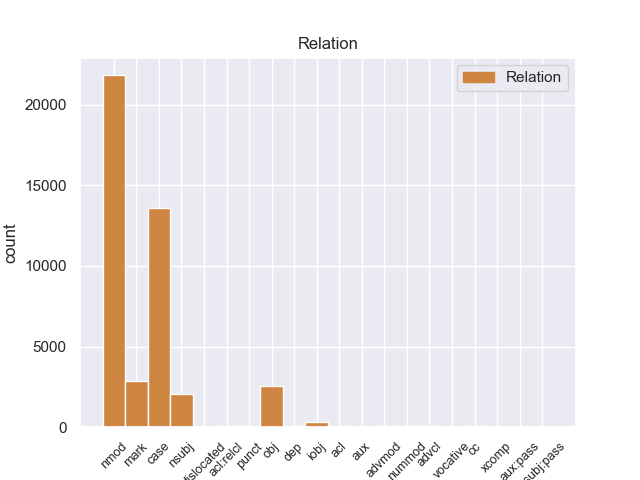
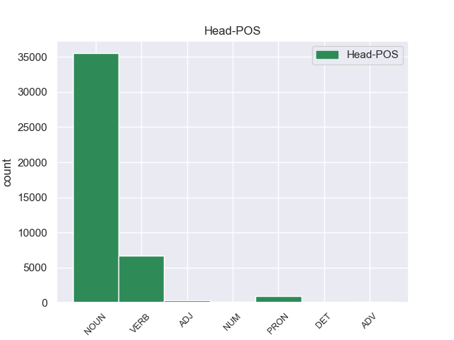
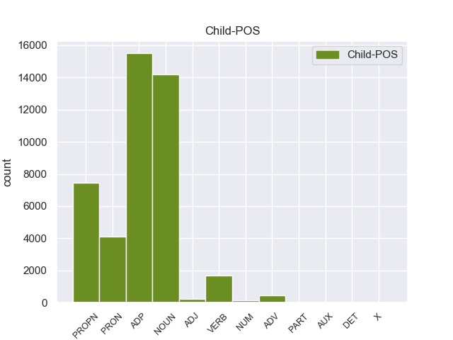

Distribution of features within this leaf



Agreement Rules sorted by frequency.
- When the dependent token is the case marking(case) of the head token, and the head token is NOUN and the dependent token is ADP.
1 उन्होंने _ _ _ _ 0 _ _ _
2 कहा _ _ _ _ 0 _ _ _
3 कि _ _ _ _ 0 _ _ _
4 चीन _ _ _ _ 0 _ _ _
5 तिब्बत _ _ _ _ 0 _ _ _
6 को _ _ _ _ 0 _ _ _
7 व्यापक _ _ _ _ 0 _ _ _
8 स्वायत्तता _ _ _ _ 0 _ _ _
9 देकर _ _ _ _ 0 _ _ _
10 इस _ _ _ _ 0 _ _ _
11 समस्या समस्या NOUN NN Case=Acc|Gender=Fem|Number=Sing|Person=3 0 _ _ _
12 के का ADP PSP AdpType=Post|Case=Acc|Gender=Masc|Number=Sing 11 case _ ChunkId=NP5|ChunkType=child|Translit=ke
13 समाधान _ _ _ _ 0 _ _ _
14 का _ _ _ _ 0 _ _ _
15 रास्ता _ _ _ _ 0 _ _ _
16 साफ _ _ _ _ 0 _ _ _
17 कर _ _ _ _ 0 _ _ _
18 सकता _ _ _ _ 0 _ _ _
19 है _ _ _ _ 0 _ _ _
20 । _ _ _ _ 0 _ _ _
1 उन्होंने _ _ _ _ 0 _ _ _
2 कहा _ _ _ _ 0 _ _ _
3 कि _ _ _ _ 0 _ _ _
4 चीन _ _ _ _ 0 _ _ _
5 तिब्बत _ _ _ _ 0 _ _ _
6 को _ _ _ _ 0 _ _ _
7 व्यापक _ _ _ _ 0 _ _ _
8 स्वायत्तता _ _ _ _ 0 _ _ _
9 देकर _ _ _ _ 0 _ _ _
10 इस _ _ _ _ 0 _ _ _
11 समस्या समस्या NOUN NN Case=Acc|Gender=Fem|Number=Sing|Person=3 13 nmod _ ChunkId=NP5|ChunkType=head|Tam=0|Translit=samasyā|Vib=0_का
12 के _ _ _ _ 0 _ _ _
13 समाधान समाधान NOUN NN Case=Acc|Gender=Masc|Number=Sing|Person=3 0 _ _ _
14 का _ _ _ _ 0 _ _ _
15 रास्ता _ _ _ _ 0 _ _ _
16 साफ _ _ _ _ 0 _ _ _
17 कर _ _ _ _ 0 _ _ _
18 सकता _ _ _ _ 0 _ _ _
19 है _ _ _ _ 0 _ _ _
20 । _ _ _ _ 0 _ _ _
1 उन्होंने _ _ _ _ 0 _ _ _
2 यहां _ _ _ _ 0 _ _ _
3 वेटिकन _ _ _ _ 0 _ _ _
4 दूतावास _ _ _ _ 0 _ _ _
5 में _ _ _ _ 0 _ _ _
6 एक _ _ _ _ 0 _ _ _
7 शोक _ _ _ _ 0 _ _ _
8 पुस्तिका _ _ _ _ 0 _ _ _
9 पर _ _ _ _ 0 _ _ _
10 हस्ताक्षर _ _ _ _ 0 _ _ _
11 कर _ _ _ _ 0 _ _ _
12 पोप _ _ _ _ 0 _ _ _
13 जॉन _ _ _ _ 0 _ _ _
14 पॉल _ _ _ _ 0 _ _ _
15 द्वितीय द्वितीय PROPN NNP Case=Acc|Gender=Masc|Number=Sing|Person=3 17 nmod _ ChunkId=NP6|ChunkType=head|Tam=0|Translit=dvitīya|Vib=0_का
16 के _ _ _ _ 0 _ _ _
17 निधन निधन NOUN NN Case=Acc|Gender=Masc|Number=Sing|Person=3 0 _ _ _
18 पर _ _ _ _ 0 _ _ _
19 गहरा _ _ _ _ 0 _ _ _
20 दुख _ _ _ _ 0 _ _ _
21 प्रकट _ _ _ _ 0 _ _ _
22 किया _ _ _ _ 0 _ _ _
23 । _ _ _ _ 0 _ _ _
1 अपने अपना PRON PRP Case=Acc|Gender=Masc|PronType=Prs 6 nmod _ ChunkId=NP|ChunkType=head|Tam=0|Translit=apane|Vib=0
2 चार _ _ _ _ 0 _ _ _
3 - _ _ _ _ 0 _ _ _
4 दिवसीय _ _ _ _ 0 _ _ _
5 भारत _ _ _ _ 0 _ _ _
6 दौरे दौरा NOUN NN Case=Acc|Gender=Masc|Number=Sing|Person=3 0 _ _ _
7 के _ _ _ _ 0 _ _ _
8 दौरान _ _ _ _ 0 _ _ _
9 वे _ _ _ _ 0 _ _ _
10 भारतीय _ _ _ _ 0 _ _ _
11 नेताओं _ _ _ _ 0 _ _ _
12 से _ _ _ _ 0 _ _ _
13 सीमा _ _ _ _ 0 _ _ _
14 विवाद _ _ _ _ 0 _ _ _
15 और _ _ _ _ 0 _ _ _
16 अन्य _ _ _ _ 0 _ _ _
17 द्विपक्षीय _ _ _ _ 0 _ _ _
18 मसलों _ _ _ _ 0 _ _ _
19 पर _ _ _ _ 0 _ _ _
20 बातचीत _ _ _ _ 0 _ _ _
21 करेंगे _ _ _ _ 0 _ _ _
22 । _ _ _ _ 0 _ _ _
1 दलाई _ _ _ _ 0 _ _ _
2 लामा _ _ _ _ 0 _ _ _
3 ने _ _ _ _ 0 _ _ _
4 कहा _ _ _ _ 0 _ _ _
5 कि _ _ _ _ 0 _ _ _
6 मैं _ _ _ _ 0 _ _ _
7 तिब्बती _ _ _ _ 0 _ _ _
8 समस्या _ _ _ _ 0 _ _ _
9 का _ _ _ _ 0 _ _ _
10 सार्थक _ _ _ _ 0 _ _ _
11 और _ _ _ _ 0 _ _ _
12 मान्य _ _ _ _ 0 _ _ _
13 हल _ _ _ _ 0 _ _ _
14 ढूंढ़ने ढूंढ़ VERB VM Case=Acc|Number=Sing|VerbForm=Inf 0 _ _ _
15 की का ADP PSP AdpType=Post|Case=Acc|Gender=Fem|Number=Sing 14 mark _ ChunkId=VGNN|ChunkType=child|Translit=kī
16 कोशिश _ _ _ _ 0 _ _ _
17 में _ _ _ _ 0 _ _ _
18 हूं _ _ _ _ 0 _ _ _
19 । _ _ _ _ 0 _ _ _
1 कांग्रेस _ _ _ _ 0 _ _ _
2 ने _ _ _ _ 0 _ _ _
3 गांधी _ _ _ _ 0 _ _ _
4 के _ _ _ _ 0 _ _ _
5 साथ _ _ _ _ 0 _ _ _
6 अपने _ _ _ _ 0 _ _ _
7 रिश्ते रिश्ता NOUN NN Case=Acc|Gender=Masc|Number=Sing|Person=3 10 obj _ ChunkId=NP4|ChunkType=head|Tam=0|Translit=riśte|Vib=0_को
8 को _ _ _ _ 0 _ _ _
9 मजबूत _ _ _ _ 0 _ _ _
10 करने कर VERB VM Case=Acc|VerbForm=Inf 0 _ _ _
11 में _ _ _ _ 0 _ _ _
12 कोई _ _ _ _ 0 _ _ _
13 कसर _ _ _ _ 0 _ _ _
14 नहीं _ _ _ _ 0 _ _ _
15 छोड़ी _ _ _ _ 0 _ _ _
16 । _ _ _ _ 0 _ _ _
1 उनका _ _ _ _ 0 _ _ _
2 कहना _ _ _ _ 0 _ _ _
3 है _ _ _ _ 0 _ _ _
4 कि _ _ _ _ 0 _ _ _
5 छोटे _ _ _ _ 0 _ _ _
6 शहरों _ _ _ _ 0 _ _ _
7 व _ _ _ _ 0 _ _ _
8 गाँवों _ _ _ _ 0 _ _ _
9 में _ _ _ _ 0 _ _ _
10 रहने _ _ _ _ 0 _ _ _
11 वाले _ _ _ _ 0 _ _ _
12 लोगों _ _ _ _ 0 _ _ _
13 को _ _ _ _ 0 _ _ _
14 ट्रेन _ _ _ _ 0 _ _ _
15 के _ _ _ _ 0 _ _ _
16 जरिये _ _ _ _ 0 _ _ _
17 पर्यटन _ _ _ _ 0 _ _ _
18 की _ _ _ _ 0 _ _ _
19 कोई कोई PRON PRP Case=Nom|Number=Sing|Person=3|PronType=Prs 20 case _ ChunkId=NP7|ChunkType=child|Tam=0|Translit=koī|Vib=0
20 सुविधा सुविधा NOUN NN Case=Nom|Gender=Fem|Number=Sing|Person=3 0 _ _ _
21 नहीं _ _ _ _ 0 _ _ _
22 मिलती _ _ _ _ 0 _ _ _
23 । _ _ _ _ 0 _ _ _
1 दलाई _ _ _ _ 0 _ _ _
2 लामा _ _ _ _ 0 _ _ _
3 ने _ _ _ _ 0 _ _ _
4 कहा _ _ _ _ 0 _ _ _
5 कि _ _ _ _ 0 _ _ _
6 मैं _ _ _ _ 0 _ _ _
7 तिब्बती _ _ _ _ 0 _ _ _
8 समस्या _ _ _ _ 0 _ _ _
9 का _ _ _ _ 0 _ _ _
10 सार्थक _ _ _ _ 0 _ _ _
11 और _ _ _ _ 0 _ _ _
12 मान्य _ _ _ _ 0 _ _ _
13 हल _ _ _ _ 0 _ _ _
14 ढूंढ़ने ढूंढ़ VERB VM Case=Acc|Number=Sing|VerbForm=Inf 16 nmod _ ChunkId=VGNN|ChunkType=head|Tam=nA|Translit=ḍhūṁṛhane|Vib=ना_का
15 की _ _ _ _ 0 _ _ _
16 कोशिश कोशिश NOUN NN Case=Acc|Gender=Fem|Number=Sing|Person=3 0 _ _ _
17 में _ _ _ _ 0 _ _ _
18 हूं _ _ _ _ 0 _ _ _
19 । _ _ _ _ 0 _ _ _
1 ताकि _ _ _ _ 0 _ _ _
2 , _ _ _ _ 0 _ _ _
3 पर्यटन _ _ _ _ 0 _ _ _
4 के _ _ _ _ 0 _ _ _
5 दौरान _ _ _ _ 0 _ _ _
6 उन्हें _ _ _ _ 0 _ _ _
7 किसी कोई PRON PRP Case=Acc|Number=Sing|Person=3|PronType=Prs 8 nsubj _ ChunkId=NP3|ChunkType=child|Tam=0|Translit=kisī|Vib=0
8 तरह तरह NOUN NN Case=Acc|Gender=Fem|Number=Sing|Person=3 0 _ _ _
9 की _ _ _ _ 0 _ _ _
10 परेशानी _ _ _ _ 0 _ _ _
11 का _ _ _ _ 0 _ _ _
12 सामना _ _ _ _ 0 _ _ _
13 न _ _ _ _ 0 _ _ _
14 करना _ _ _ _ 0 _ _ _
15 पड़े _ _ _ _ 0 _ _ _
16 । _ _ _ _ 0 _ _ _
1 उनके _ _ _ _ 0 _ _ _
2 भारत _ _ _ _ 0 _ _ _
3 दौरे _ _ _ _ 0 _ _ _
4 की _ _ _ _ 0 _ _ _
5 तारीख तारीख NOUN NN Case=Nom|Gender=Fem|Number=Sing|Person=3 8 nsubj _ ChunkId=NP3|ChunkType=head|Tam=0|Translit=tārīkha|Vib=0
6 अभी _ _ _ _ 0 _ _ _
7 तय _ _ _ _ 0 _ _ _
8 होनी हो VERB VM Case=Nom|VerbForm=Inf 0 _ _ _
9 बाकी _ _ _ _ 0 _ _ _
10 है _ _ _ _ 0 _ _ _
11 । _ _ _ _ 0 _ _ _
1 मुशर्रफ _ _ _ _ 0 _ _ _
2 ने _ _ _ _ 0 _ _ _
3 इस _ _ _ _ 0 _ _ _
4 पर _ _ _ _ 0 _ _ _
5 सहमति _ _ _ _ 0 _ _ _
6 जताई _ _ _ _ 0 _ _ _
7 थी _ _ _ _ 0 _ _ _
8 , _ _ _ _ 0 _ _ _
9 लेकिन _ _ _ _ 0 _ _ _
10 किसी _ _ _ _ 0 _ _ _
11 भी _ _ _ _ 0 _ _ _
12 ग़ैर _ _ _ _ 0 _ _ _
13 पाकिस्तानी पाकिस्तानी NOUN NN Case=Acc|Gender=Masc|Number=Sing|Person=3 20 iobj _ ChunkId=NP4|ChunkType=head|Tam=0|Translit=pākistānī|Vib=0_को
14 को _ _ _ _ 0 _ _ _
15 खान _ _ _ _ 0 _ _ _
16 से _ _ _ _ 0 _ _ _
17 पूछताछ _ _ _ _ 0 _ _ _
18 की _ _ _ _ 0 _ _ _
19 अनुमति _ _ _ _ 0 _ _ _
20 देने दे VERB VM Case=Acc|VerbForm=Inf 0 _ _ _
21 से _ _ _ _ 0 _ _ _
22 इन्कार _ _ _ _ 0 _ _ _
23 कर _ _ _ _ 0 _ _ _
24 दिया _ _ _ _ 0 _ _ _
25 था _ _ _ _ 0 _ _ _
26 । _ _ _ _ 0 _ _ _
1 टीम टीम NOUN NN Case=Nom|Gender=Fem|Number=Sing|Person=3 3 nsubj _ ChunkId=NP|ChunkType=head|Tam=0|Translit=ṭīma|Vib=0
2 इस _ _ _ _ 0 _ _ _
3 प्रकार प्रकार NOUN NN Case=Nom|Gender=Masc|Number=Sing|Person=3 0 _ _ _
4 है _ _ _ _ 0 _ _ _
5 - _ _ _ _ 0 _ _ _
6 सौरव _ _ _ _ 0 _ _ _
7 गांगुली _ _ _ _ 0 _ _ _
8 ( _ _ _ _ 0 _ _ _
9 कप्तान _ _ _ _ 0 _ _ _
10 ) _ _ _ _ 0 _ _ _
11 , _ _ _ _ 0 _ _ _
12 राहुल _ _ _ _ 0 _ _ _
13 द्रविड़ _ _ _ _ 0 _ _ _
14 ( _ _ _ _ 0 _ _ _
15 उप _ _ _ _ 0 _ _ _
16 - _ _ _ _ 0 _ _ _
17 कप्तान _ _ _ _ 0 _ _ _
18 ) _ _ _ _ 0 _ _ _
19 , _ _ _ _ 0 _ _ _
20 वीरेन्द्र _ _ _ _ 0 _ _ _
21 सहवाग _ _ _ _ 0 _ _ _
22 , _ _ _ _ 0 _ _ _
23 सचिन _ _ _ _ 0 _ _ _
24 तेंदुलकर _ _ _ _ 0 _ _ _
25 , _ _ _ _ 0 _ _ _
26 वी. _ _ _ _ 0 _ _ _
27 वी. _ _ _ _ 0 _ _ _
28 एस. _ _ _ _ 0 _ _ _
29 लक्ष्मण _ _ _ _ 0 _ _ _
30 , _ _ _ _ 0 _ _ _
31 युवराज _ _ _ _ 0 _ _ _
32 सिंह _ _ _ _ 0 _ _ _
33 , _ _ _ _ 0 _ _ _
34 मोहम्मद _ _ _ _ 0 _ _ _
35 कैफ़ _ _ _ _ 0 _ _ _
36 , _ _ _ _ 0 _ _ _
37 श्रीधरन _ _ _ _ 0 _ _ _
38 श्रीराम _ _ _ _ 0 _ _ _
39 , _ _ _ _ 0 _ _ _
40 हरभजन _ _ _ _ 0 _ _ _
41 सिंह _ _ _ _ 0 _ _ _
42 , _ _ _ _ 0 _ _ _
43 अनिल _ _ _ _ 0 _ _ _
44 कुंबले _ _ _ _ 0 _ _ _
45 , _ _ _ _ 0 _ _ _
46 ज़हीर _ _ _ _ 0 _ _ _
47 खान _ _ _ _ 0 _ _ _
48 , _ _ _ _ 0 _ _ _
49 इरफ़ान _ _ _ _ 0 _ _ _
50 पठान _ _ _ _ 0 _ _ _
51 , _ _ _ _ 0 _ _ _
52 आशीष _ _ _ _ 0 _ _ _
53 नेहरा _ _ _ _ 0 _ _ _
54 , _ _ _ _ 0 _ _ _
55 अजीत _ _ _ _ 0 _ _ _
56 अगरकर _ _ _ _ 0 _ _ _
57 , _ _ _ _ 0 _ _ _
58 दिनेश _ _ _ _ 0 _ _ _
59 कार्तिक _ _ _ _ 0 _ _ _
60 ( _ _ _ _ 0 _ _ _
61 विकेट _ _ _ _ 0 _ _ _
62 कीपर _ _ _ _ 0 _ _ _
63 ) _ _ _ _ 0 _ _ _
64 । _ _ _ _ 0 _ _ _
1 दांडी _ _ _ _ 0 _ _ _
2 मार्च _ _ _ _ 0 _ _ _
3 की _ _ _ _ 0 _ _ _
4 बरसी _ _ _ _ 0 _ _ _
5 के _ _ _ _ 0 _ _ _
6 मौके _ _ _ _ 0 _ _ _
7 पर _ _ _ _ 0 _ _ _
8 आयोजित _ _ _ _ 0 _ _ _
9 मार्च मार्च PROPN NNP Case=Acc|Gender=Masc|Number=Sing|Person=3 12 obj _ ChunkId=NP4|ChunkType=head|Tam=0|Translit=mārca|Vib=0_को
10 को _ _ _ _ 0 _ _ _
11 सफल _ _ _ _ 0 _ _ _
12 बनाने बना VERB VM Case=Acc|VerbForm=Inf 0 _ _ _
13 में _ _ _ _ 0 _ _ _
14 कांग्रेसियों _ _ _ _ 0 _ _ _
15 की _ _ _ _ 0 _ _ _
16 भूमिका _ _ _ _ 0 _ _ _
17 की _ _ _ _ 0 _ _ _
18 महात्मा _ _ _ _ 0 _ _ _
19 गांधी _ _ _ _ 0 _ _ _
20 के _ _ _ _ 0 _ _ _
21 परपौत्र _ _ _ _ 0 _ _ _
22 तुषार _ _ _ _ 0 _ _ _
23 गांधी _ _ _ _ 0 _ _ _
24 भरपूर _ _ _ _ 0 _ _ _
25 सराहना _ _ _ _ 0 _ _ _
26 करते _ _ _ _ 0 _ _ _
27 हैं _ _ _ _ 0 _ _ _
28 । _ _ _ _ 0 _ _ _
1 उन्होंने _ _ _ _ 0 _ _ _
2 कहा _ _ _ _ 0 _ _ _
3 कि _ _ _ _ 0 _ _ _
4 भारत भारत PROPN NNP Case=Nom|Gender=Masc|Number=Sing|Person=3 10 nsubj _ ChunkId=NP2|ChunkType=head|Tam=0|Translit=bhārata|Vib=0
5 और _ _ _ _ 0 _ _ _
6 चीन _ _ _ _ 0 _ _ _
7 सर्वाधिक _ _ _ _ 0 _ _ _
8 आबादी _ _ _ _ 0 _ _ _
9 वाले _ _ _ _ 0 _ _ _
10 देश देश NOUN NN Case=Nom|Gender=Masc|Number=Plur|Person=3 0 _ _ _
11 हैं _ _ _ _ 0 _ _ _
12 । _ _ _ _ 0 _ _ _
1 चीनी _ _ _ _ 0 _ _ _
2 प्रधानमंत्री _ _ _ _ 0 _ _ _
3 वेन _ _ _ _ 0 _ _ _
4 जियाबाओ _ _ _ _ 0 _ _ _
5 की _ _ _ _ 0 _ _ _
6 भारत _ _ _ _ 0 _ _ _
7 यात्रा _ _ _ _ 0 _ _ _
8 से _ _ _ _ 0 _ _ _
9 पहले _ _ _ _ 0 _ _ _
10 निर्वासित _ _ _ _ 0 _ _ _
11 तिब्बती _ _ _ _ 0 _ _ _
12 आध्यात्मिक _ _ _ _ 0 _ _ _
13 नेता _ _ _ _ 0 _ _ _
14 दलाई _ _ _ _ 0 _ _ _
15 लामा _ _ _ _ 0 _ _ _
16 ने _ _ _ _ 0 _ _ _
17 कहा _ _ _ _ 0 _ _ _
18 है _ _ _ _ 0 _ _ _
19 कि _ _ _ _ 0 _ _ _
20 चीनी _ _ _ _ 0 _ _ _
21 और _ _ _ _ 0 _ _ _
22 तिब्बती _ _ _ _ 0 _ _ _
23 एक _ _ _ _ 0 _ _ _
24 - _ _ _ _ 0 _ _ _
25 दूसरे दूसरा PRON PRP Case=Acc|Number=Sing|Person=3|PronType=Prs 0 _ _ _
26 की का ADP PSP AdpType=Post|Case=Acc|Gender=Fem|Number=Sing 25 case _ ChunkId=NP5|ChunkType=child|Translit=kī
27 सांस्कृतिक _ _ _ _ 0 _ _ _
28 विशिष्टता _ _ _ _ 0 _ _ _
29 का _ _ _ _ 0 _ _ _
30 आदर _ _ _ _ 0 _ _ _
31 करते _ _ _ _ 0 _ _ _
32 हैं _ _ _ _ 0 _ _ _
33 । _ _ _ _ 0 _ _ _
1 लेकिन _ _ _ _ 0 _ _ _
2 प्रतिद्वंद्वी _ _ _ _ 0 _ _ _
3 स्टील _ _ _ _ 0 _ _ _
4 कंपनी _ _ _ _ 0 _ _ _
5 ग्लोबल _ _ _ _ 0 _ _ _
6 इंफ्रास्ट्रक्चर _ _ _ _ 0 _ _ _
7 होल्डिंग _ _ _ _ 0 _ _ _
8 लिमिटेड लिमिटेड PROPN NNP Case=Acc|Gender=Masc|Number=Sing|Person=3 20 nsubj _ ChunkId=NP2|ChunkType=head|Tam=0|Translit=limiṭeḍa|Vib=0
9 ( _ _ _ _ 0 _ _ _
10 जीआईएचएल _ _ _ _ 0 _ _ _
11 ) _ _ _ _ 0 _ _ _
12 द्वारा _ _ _ _ 0 _ _ _
13 लाइबेरिया _ _ _ _ 0 _ _ _
14 सरकार _ _ _ _ 0 _ _ _
15 के _ _ _ _ 0 _ _ _
16 खिलाफ़ _ _ _ _ 0 _ _ _
17 कानूनी _ _ _ _ 0 _ _ _
18 चुनौती _ _ _ _ 0 _ _ _
19 पेश _ _ _ _ 0 _ _ _
20 करने कर VERB VM Case=Acc|VerbForm=Inf 0 _ _ _
21 से _ _ _ _ 0 _ _ _
22 परियोजना _ _ _ _ 0 _ _ _
23 में _ _ _ _ 0 _ _ _
24 विलंब _ _ _ _ 0 _ _ _
25 हो _ _ _ _ 0 _ _ _
26 रहा _ _ _ _ 0 _ _ _
27 है _ _ _ _ 0 _ _ _
28 । _ _ _ _ 0 _ _ _
1 कांग्रेस _ _ _ _ 0 _ _ _
2 ने _ _ _ _ 0 _ _ _
3 गांधी _ _ _ _ 0 _ _ _
4 के _ _ _ _ 0 _ _ _
5 साथ _ _ _ _ 0 _ _ _
6 अपने _ _ _ _ 0 _ _ _
7 रिश्ते _ _ _ _ 0 _ _ _
8 को _ _ _ _ 0 _ _ _
9 मजबूत _ _ _ _ 0 _ _ _
10 करने _ _ _ _ 0 _ _ _
11 में _ _ _ _ 0 _ _ _
12 कोई कोई PRON PRP Case=Nom|Number=Sing|Person=3|PronType=Prs 13 mark _ ChunkId=NP5|ChunkType=child|Tam=0|Translit=koī|Vib=0
13 कसर कसर NOUN NN Case=Nom|Gender=Fem|Number=Sing|Person=3 0 _ _ _
14 नहीं _ _ _ _ 0 _ _ _
15 छोड़ी _ _ _ _ 0 _ _ _
16 । _ _ _ _ 0 _ _ _
1 यह _ _ _ _ 0 _ _ _
2 कहना _ _ _ _ 0 _ _ _
3 है _ _ _ _ 0 _ _ _
4 अमेरिका _ _ _ _ 0 _ _ _
5 का _ _ _ _ 0 _ _ _
6 , _ _ _ _ 0 _ _ _
7 जो _ _ _ _ 0 _ _ _
8 सऊदी _ _ _ _ 0 _ _ _
9 अरब अरब PROPN NNP Case=Acc|Gender=Masc|Number=Sing|Person=3 17 iobj _ ChunkId=NP4|ChunkType=head|Tam=0|Translit=araba|Vib=0
10 और _ _ _ _ 0 _ _ _
11 अन्य _ _ _ _ 0 _ _ _
12 अरब _ _ _ _ 0 _ _ _
13 देशों _ _ _ _ 0 _ _ _
14 को _ _ _ _ 0 _ _ _
15 परमाणु _ _ _ _ 0 _ _ _
16 तक़नीक _ _ _ _ 0 _ _ _
17 बेचने बेच VERB VM Case=Acc|VerbForm=Inf 0 _ _ _
18 में _ _ _ _ 0 _ _ _
19 खान _ _ _ _ 0 _ _ _
20 नेटवर्क _ _ _ _ 0 _ _ _
21 की _ _ _ _ 0 _ _ _
22 भूमिका _ _ _ _ 0 _ _ _
23 का _ _ _ _ 0 _ _ _
24 पता _ _ _ _ 0 _ _ _
25 लगा _ _ _ _ 0 _ _ _
26 रहा _ _ _ _ 0 _ _ _
27 है _ _ _ _ 0 _ _ _
28 । _ _ _ _ 0 _ _ _
1 वोल्कर _ _ _ _ 0 _ _ _
2 से _ _ _ _ 0 _ _ _
3 पूछा _ _ _ _ 0 _ _ _
4 गया _ _ _ _ 0 _ _ _
5 था _ _ _ _ 0 _ _ _
6 कि _ _ _ _ 0 _ _ _
7 क्या _ _ _ _ 0 _ _ _
8 कोजो _ _ _ _ 0 _ _ _
9 ने _ _ _ _ 0 _ _ _
10 अपने _ _ _ _ 0 _ _ _
11 पिता _ _ _ _ 0 _ _ _
12 के _ _ _ _ 0 _ _ _
13 संबंधों संबंध NOUN NN Case=Acc|Gender=Masc|Number=Plur|Person=3 16 nmod _ ChunkId=NP5|ChunkType=head|Tam=0|Translit=saṁbaṁdhoṁ|Vib=0_का
14 का _ _ _ _ 0 _ _ _
15 इस्तेमाल _ _ _ _ 0 _ _ _
16 अपनी अपना PRON PRP Case=Acc|Gender=Fem|PronType=Prs 0 _ _ _
17 कंपनी _ _ _ _ 0 _ _ _
18 को _ _ _ _ 0 _ _ _
19 लाभ _ _ _ _ 0 _ _ _
20 पहुंचाने _ _ _ _ 0 _ _ _
21 के _ _ _ _ 0 _ _ _
22 लिए _ _ _ _ 0 _ _ _
23 किया _ _ _ _ 0 _ _ _
24 था _ _ _ _ 0 _ _ _
25 । _ _ _ _ 0 _ _ _
1 उन्होंने _ _ _ _ 0 _ _ _
2 कहा _ _ _ _ 0 _ _ _
3 कि _ _ _ _ 0 _ _ _
4 दक्षिण _ _ _ _ 0 _ _ _
5 इराक़ _ _ _ _ 0 _ _ _
6 के _ _ _ _ 0 _ _ _
7 बसरा _ _ _ _ 0 _ _ _
8 क्षेत्र _ _ _ _ 0 _ _ _
9 के _ _ _ _ 0 _ _ _
10 आस _ _ _ _ 0 _ _ _
11 - _ _ _ _ 0 _ _ _
12 पास पास ADV NST AdpType=Post|Case=Acc|Gender=Masc|Number=Sing|Person=3 0 _ _ _
13 के का ADP PSP AdpType=Post|Case=Acc|Gender=Masc|Number=Plur 12 case _ ChunkId=NP4|ChunkType=child|Translit=ke
14 इलाकों _ _ _ _ 0 _ _ _
15 में _ _ _ _ 0 _ _ _
16 दोनों _ _ _ _ 0 _ _ _
17 देशों _ _ _ _ 0 _ _ _
18 द्वारा _ _ _ _ 0 _ _ _
19 संयुक्त _ _ _ _ 0 _ _ _
20 रूप _ _ _ _ 0 _ _ _
21 से _ _ _ _ 0 _ _ _
22 तेल _ _ _ _ 0 _ _ _
23 भंडार _ _ _ _ 0 _ _ _
24 का _ _ _ _ 0 _ _ _
25 पता _ _ _ _ 0 _ _ _
26 लगाया _ _ _ _ 0 _ _ _
27 जाएगा _ _ _ _ 0 _ _ _
28 । _ _ _ _ 0 _ _ _
1 रजत _ _ _ _ 0 _ _ _
2 जयंती _ _ _ _ 0 _ _ _
3 मनाने _ _ _ _ 0 _ _ _
4 वाले _ _ _ _ 0 _ _ _
5 और _ _ _ _ 0 _ _ _
6 राजनीतिक _ _ _ _ 0 _ _ _
7 प्रस्ताव _ _ _ _ 0 _ _ _
8 में _ _ _ _ 0 _ _ _
9 इस _ _ _ _ 0 _ _ _
10 बात _ _ _ _ 0 _ _ _
11 का _ _ _ _ 0 _ _ _
12 कोई _ _ _ _ 0 _ _ _
13 जिक्र _ _ _ _ 0 _ _ _
14 नहीं _ _ _ _ 0 _ _ _
15 है _ _ _ _ 0 _ _ _
16 कि _ _ _ _ 0 _ _ _
17 पार्टी _ _ _ _ 0 _ _ _
18 ने _ _ _ _ 0 _ _ _
19 पच्चीस _ _ _ _ 0 _ _ _
20 साल _ _ _ _ 0 _ _ _
21 पहले _ _ _ _ 0 _ _ _
22 जिस _ _ _ _ 0 _ _ _
23 रास्ते _ _ _ _ 0 _ _ _
24 पर _ _ _ _ 0 _ _ _
25 चलने _ _ _ _ 0 _ _ _
26 का _ _ _ _ 0 _ _ _
27 संकल्प _ _ _ _ 0 _ _ _
28 लिया _ _ _ _ 0 _ _ _
29 था _ _ _ _ 0 _ _ _
30 , _ _ _ _ 0 _ _ _
31 वह _ _ _ _ 0 _ _ _
32 रास्ता रास्ता NOUN NN Case=Nom|Gender=Masc|Number=Sing|Person=3 34 nsubj _ ChunkId=NP9|ChunkType=head|Tam=0|Translit=rāstā|Vib=0
33 क्या _ _ _ _ 0 _ _ _
34 वही वह PRON PRP Case=Nom|Gender=Masc|Number=Sing|Person=3|PronType=Prs 0 _ _ _
35 है _ _ _ _ 0 _ _ _
36 जिस _ _ _ _ 0 _ _ _
37 पर _ _ _ _ 0 _ _ _
38 वह _ _ _ _ 0 _ _ _
39 आज _ _ _ _ 0 _ _ _
40 खड़ी _ _ _ _ 0 _ _ _
41 है _ _ _ _ 0 _ _ _
42 । _ _ _ _ 0 _ _ _
1 जापान _ _ _ _ 0 _ _ _
2 ने _ _ _ _ 0 _ _ _
3 बृहस्पतिवार _ _ _ _ 0 _ _ _
4 को _ _ _ _ 0 _ _ _
5 कहा _ _ _ _ 0 _ _ _
6 कि _ _ _ _ 0 _ _ _
7 वह _ _ _ _ 0 _ _ _
8 सुनामी _ _ _ _ 0 _ _ _
9 चेतावनी _ _ _ _ 0 _ _ _
10 प्रणाली _ _ _ _ 0 _ _ _
11 शीघ्र _ _ _ _ 0 _ _ _
12 स्थापित _ _ _ _ 0 _ _ _
13 करने कर VERB VM Case=Acc|VerbForm=Inf 20 advcl _ ChunkId=VGNN|ChunkType=head|Tam=nA|Translit=karane|Vib=ना_के_लिए
14 के _ _ _ _ 0 _ _ _
15 लिए _ _ _ _ 0 _ _ _
16 भारत _ _ _ _ 0 _ _ _
17 को _ _ _ _ 0 _ _ _
18 तक़नीक _ _ _ _ 0 _ _ _
19 हस्तांतरित _ _ _ _ 0 _ _ _
20 करने कर VERB VM Case=Acc|VerbForm=Inf 0 _ _ _
21 और _ _ _ _ 0 _ _ _
22 अपने _ _ _ _ 0 _ _ _
23 अनुभवों _ _ _ _ 0 _ _ _
24 को _ _ _ _ 0 _ _ _
25 बांटने _ _ _ _ 0 _ _ _
26 के _ _ _ _ 0 _ _ _
27 लिए _ _ _ _ 0 _ _ _
28 तैयार _ _ _ _ 0 _ _ _
29 है _ _ _ _ 0 _ _ _
30 । _ _ _ _ 0 _ _ _
1 दोनों दो NUM QC Case=Acc|Number=Plur|NumType=Card 2 nummod _ ChunkId=NP|ChunkType=child|Translit=donoṁ
2 नेताओं नेता NOUN NN Case=Acc|Gender=Masc|Number=Plur|Person=3 0 _ _ _
3 ने _ _ _ _ 0 _ _ _
4 द्विपक्षीय _ _ _ _ 0 _ _ _
5 , _ _ _ _ 0 _ _ _
6 क्षेत्रीय _ _ _ _ 0 _ _ _
7 और _ _ _ _ 0 _ _ _
8 अंतर्राष्ट्रीय _ _ _ _ 0 _ _ _
9 मुद्दों _ _ _ _ 0 _ _ _
10 पर _ _ _ _ 0 _ _ _
11 विचार _ _ _ _ 0 _ _ _
12 - _ _ _ _ 0 _ _ _
13 विमर्श _ _ _ _ 0 _ _ _
14 किया _ _ _ _ 0 _ _ _
15 । _ _ _ _ 0 _ _ _
1 उन्होंने _ _ _ _ 0 _ _ _
2 कहा _ _ _ _ 0 _ _ _
3 कि _ _ _ _ 0 _ _ _
4 दक्षिण _ _ _ _ 0 _ _ _
5 इराक़ _ _ _ _ 0 _ _ _
6 के _ _ _ _ 0 _ _ _
7 बसरा _ _ _ _ 0 _ _ _
8 क्षेत्र _ _ _ _ 0 _ _ _
9 के _ _ _ _ 0 _ _ _
10 आस _ _ _ _ 0 _ _ _
11 - _ _ _ _ 0 _ _ _
12 पास पास ADV NST AdpType=Post|Case=Acc|Gender=Masc|Number=Sing|Person=3 14 nmod _ AltTag=ADV-NOUN|ChunkId=NP4|ChunkType=head|Translit=pāsa|Vib=0_का
13 के _ _ _ _ 0 _ _ _
14 इलाकों इलाका NOUN NN Case=Acc|Gender=Masc|Number=Plur|Person=3 0 _ _ _
15 में _ _ _ _ 0 _ _ _
16 दोनों _ _ _ _ 0 _ _ _
17 देशों _ _ _ _ 0 _ _ _
18 द्वारा _ _ _ _ 0 _ _ _
19 संयुक्त _ _ _ _ 0 _ _ _
20 रूप _ _ _ _ 0 _ _ _
21 से _ _ _ _ 0 _ _ _
22 तेल _ _ _ _ 0 _ _ _
23 भंडार _ _ _ _ 0 _ _ _
24 का _ _ _ _ 0 _ _ _
25 पता _ _ _ _ 0 _ _ _
26 लगाया _ _ _ _ 0 _ _ _
27 जाएगा _ _ _ _ 0 _ _ _
28 । _ _ _ _ 0 _ _ _
1 सवाल _ _ _ _ 0 _ _ _
2 यह _ _ _ _ 0 _ _ _
3 है _ _ _ _ 0 _ _ _
4 कि _ _ _ _ 0 _ _ _
5 सेंसेक्स _ _ _ _ 0 _ _ _
6 के _ _ _ _ 0 _ _ _
7 ६३२८ ६३२८ NUM QC Case=Acc|Number=Plur|NumType=Card 10 nmod _ ChunkId=NP4|ChunkType=head|Translit=6328|Vib=0_का
8 की _ _ _ _ 0 _ _ _
9 रिकार्ड _ _ _ _ 0 _ _ _
10 ऊंचाई ऊंचाई NOUN NN Case=Acc|Gender=Fem|Number=Sing|Person=3 0 _ _ _
11 पर _ _ _ _ 0 _ _ _
12 पहुंच _ _ _ _ 0 _ _ _
13 जाने _ _ _ _ 0 _ _ _
14 पर _ _ _ _ 0 _ _ _
15 निवेश _ _ _ _ 0 _ _ _
16 कहां _ _ _ _ 0 _ _ _
17 जाए _ _ _ _ 0 _ _ _
18 - _ _ _ _ 0 _ _ _
19 शेयर _ _ _ _ 0 _ _ _
20 बाजार _ _ _ _ 0 _ _ _
21 में _ _ _ _ 0 _ _ _
22 , _ _ _ _ 0 _ _ _
23 म्यूचुअल _ _ _ _ 0 _ _ _
24 फंड _ _ _ _ 0 _ _ _
25 में _ _ _ _ 0 _ _ _
26 या _ _ _ _ 0 _ _ _
27 फिक्स्ड _ _ _ _ 0 _ _ _
28 डिपॉजिट _ _ _ _ 0 _ _ _
29 में _ _ _ _ 0 _ _ _
30 ? _ _ _ _ 0 _ _ _
1 मंत्रालय _ _ _ _ 0 _ _ _
2 में _ _ _ _ 0 _ _ _
3 इस _ _ _ _ 0 _ _ _
4 रिपोर्ट _ _ _ _ 0 _ _ _
5 पर _ _ _ _ 0 _ _ _
6 विचार _ _ _ _ 0 _ _ _
7 - _ _ _ _ 0 _ _ _
8 विमर्श _ _ _ _ 0 _ _ _
9 चल _ _ _ _ 0 _ _ _
10 रहा _ _ _ _ 0 _ _ _
11 है _ _ _ _ 0 _ _ _
12 और _ _ _ _ 0 _ _ _
13 जल्द _ _ _ _ 0 _ _ _
14 ही _ _ _ _ 0 _ _ _
15 कोई कोई PRON PRP Case=Nom|Number=Sing|Person=3|PronType=Prs 16 dep _ ChunkId=NP4|ChunkType=child|Tam=0|Translit=koī|Vib=0
16 निर्णय निर्णय NOUN NN Case=Nom|Gender=Masc|Number=Sing|Person=3 0 _ _ _
17 ले _ _ _ _ 0 _ _ _
18 लिया _ _ _ _ 0 _ _ _
19 जाएगा _ _ _ _ 0 _ _ _
20 । _ _ _ _ 0 _ _ _
1 यहां _ _ _ _ 0 _ _ _
2 ५१८ ५१८ NUM QC Case=Acc|Number=Plur|NumType=Card 0 _ _ _
3 के _ _ _ _ 0 _ _ _
4 मुकाबले मुकाबला ADP PSP Case=Acc|Gender=Masc 2 case _ ChunkId=NP2|ChunkType=child|Translit=mukābale
5 महज _ _ _ _ 0 _ _ _
6 ४२९ _ _ _ _ 0 _ _ _
7 मिमी _ _ _ _ 0 _ _ _
8 वर्षा _ _ _ _ 0 _ _ _
9 हुई _ _ _ _ 0 _ _ _
10 है _ _ _ _ 0 _ _ _
11 । _ _ _ _ 0 _ _ _
1 उदाहरण _ _ _ _ 0 _ _ _
2 के _ _ _ _ 0 _ _ _
3 लिए _ _ _ _ 0 _ _ _
4 , _ _ _ _ 0 _ _ _
5 यदि _ _ _ _ 0 _ _ _
6 कोई _ _ _ _ 0 _ _ _
7 म्यूचुअल _ _ _ _ 0 _ _ _
8 फंड _ _ _ _ 0 _ _ _
9 ऐसे _ _ _ _ 0 _ _ _
10 समय समय NOUN NN Case=Acc|Gender=Masc|Number=Sing|Person=3 0 _ _ _
11 में _ _ _ _ 0 _ _ _
12 बैंकिंग _ _ _ _ 0 _ _ _
13 स्कीम _ _ _ _ 0 _ _ _
14 लॉंच _ _ _ _ 0 _ _ _
15 करता _ _ _ _ 0 _ _ _
16 है _ _ _ _ 0 _ _ _
17 जब _ _ _ _ 0 _ _ _
18 बैंकिंग _ _ _ _ 0 _ _ _
19 कंपनियों _ _ _ _ 0 _ _ _
20 के _ _ _ _ 0 _ _ _
21 शेयर _ _ _ _ 0 _ _ _
22 काफी _ _ _ _ 0 _ _ _
23 ऊंचाई ऊंचाई NOUN NN Case=Acc|Gender=Fem|Number=Sing|Person=3 10 acl:relcl _ ChunkId=NP8|ChunkType=head|Tam=0|Translit=ūṁcāī|Vib=0_पर
24 पर _ _ _ _ 0 _ _ _
25 हैं _ _ _ _ 0 _ _ _
26 तो _ _ _ _ 0 _ _ _
27 सेंसेक्स _ _ _ _ 0 _ _ _
28 के _ _ _ _ 0 _ _ _
29 गिरते _ _ _ _ 0 _ _ _
30 ही _ _ _ _ 0 _ _ _
31 स्कीम _ _ _ _ 0 _ _ _
32 का _ _ _ _ 0 _ _ _
33 एनएवी _ _ _ _ 0 _ _ _
34 अंकित _ _ _ _ 0 _ _ _
35 मूल्य _ _ _ _ 0 _ _ _
36 से _ _ _ _ 0 _ _ _
37 कम _ _ _ _ 0 _ _ _
38 हो _ _ _ _ 0 _ _ _
39 जाएगा _ _ _ _ 0 _ _ _
40 और _ _ _ _ 0 _ _ _
41 आप _ _ _ _ 0 _ _ _
42 अफसोस _ _ _ _ 0 _ _ _
43 करते _ _ _ _ 0 _ _ _
44 नजर _ _ _ _ 0 _ _ _
45 आएंगे _ _ _ _ 0 _ _ _
46 । _ _ _ _ 0 _ _ _
1 यह यह PRON PRP Case=Nom|Number=Sing|Person=3|PronType=Prs 2 obj _ ChunkId=NP|ChunkType=head|Tam=0|Translit=yaha|Vib=0
2 कहना कह VERB VM Case=Nom|VerbForm=Inf 0 _ _ _
3 है _ _ _ _ 0 _ _ _
4 अमेरिका _ _ _ _ 0 _ _ _
5 का _ _ _ _ 0 _ _ _
6 , _ _ _ _ 0 _ _ _
7 जो _ _ _ _ 0 _ _ _
8 सऊदी _ _ _ _ 0 _ _ _
9 अरब _ _ _ _ 0 _ _ _
10 और _ _ _ _ 0 _ _ _
11 अन्य _ _ _ _ 0 _ _ _
12 अरब _ _ _ _ 0 _ _ _
13 देशों _ _ _ _ 0 _ _ _
14 को _ _ _ _ 0 _ _ _
15 परमाणु _ _ _ _ 0 _ _ _
16 तक़नीक _ _ _ _ 0 _ _ _
17 बेचने _ _ _ _ 0 _ _ _
18 में _ _ _ _ 0 _ _ _
19 खान _ _ _ _ 0 _ _ _
20 नेटवर्क _ _ _ _ 0 _ _ _
21 की _ _ _ _ 0 _ _ _
22 भूमिका _ _ _ _ 0 _ _ _
23 का _ _ _ _ 0 _ _ _
24 पता _ _ _ _ 0 _ _ _
25 लगा _ _ _ _ 0 _ _ _
26 रहा _ _ _ _ 0 _ _ _
27 है _ _ _ _ 0 _ _ _
28 । _ _ _ _ 0 _ _ _
1 पर्यवेक्षकों _ _ _ _ 0 _ _ _
2 का _ _ _ _ 0 _ _ _
3 कहना _ _ _ _ 0 _ _ _
4 है _ _ _ _ 0 _ _ _
5 कि _ _ _ _ 0 _ _ _
6 इस _ _ _ _ 0 _ _ _
7 मार्च _ _ _ _ 0 _ _ _
8 के _ _ _ _ 0 _ _ _
9 दौरान _ _ _ _ 0 _ _ _
10 कांग्रेसियों _ _ _ _ 0 _ _ _
11 ने _ _ _ _ 0 _ _ _
12 भाजपा _ _ _ _ 0 _ _ _
13 का _ _ _ _ 0 _ _ _
14 जिक्र _ _ _ _ 0 _ _ _
15 करने _ _ _ _ 0 _ _ _
16 से _ _ _ _ 0 _ _ _
17 परहेज _ _ _ _ 0 _ _ _
18 कर _ _ _ _ 0 _ _ _
19 लोगों _ _ _ _ 0 _ _ _
20 में _ _ _ _ 0 _ _ _
21 यह _ _ _ _ 0 _ _ _
22 संदेश _ _ _ _ 0 _ _ _
23 दिया _ _ _ _ 0 _ _ _
24 कि _ _ _ _ 0 _ _ _
25 वह _ _ _ _ 0 _ _ _
26 गांधीवादी _ _ _ _ 0 _ _ _
27 विरासत _ _ _ _ 0 _ _ _
28 को _ _ _ _ 0 _ _ _
29 लेकर _ _ _ _ 0 _ _ _
30 भाजपा _ _ _ _ 0 _ _ _
31 या _ _ _ _ 0 _ _ _
32 किसी कोई PRON PRP Case=Acc|Number=Sing|Person=3|PronType=Prs 34 cc _ ChunkId=NP12|ChunkType=child|Tam=0|Translit=kisī|Vib=0
33 अन्य _ _ _ _ 0 _ _ _
34 पार्टी पार्टी NOUN NN Case=Acc|Gender=Fem|Number=Sing|Person=3 0 _ _ _
35 से _ _ _ _ 0 _ _ _
36 टकराव _ _ _ _ 0 _ _ _
37 नहीं _ _ _ _ 0 _ _ _
38 चाहती _ _ _ _ 0 _ _ _
39 है _ _ _ _ 0 _ _ _
40 । _ _ _ _ 0 _ _ _
1 बारामुला _ _ _ _ 0 _ _ _
2 जिले _ _ _ _ 0 _ _ _
3 में _ _ _ _ 0 _ _ _
4 सोपोर _ _ _ _ 0 _ _ _
5 की _ _ _ _ 0 _ _ _
6 एक _ _ _ _ 0 _ _ _
7 मस्जिद _ _ _ _ 0 _ _ _
8 में _ _ _ _ 0 _ _ _
9 छिपे छिप VERB VM Aspect=Perf|Case=Acc|Gender=Masc|Number=Plur|VerbForm=Part 10 acl _ ChunkId=VGNF|ChunkType=head|Tam=yA|Translit=chipe|Vib=या
10 आतंकियों आतंकी NOUN NN Case=Acc|Gender=Masc|Number=Plur|Person=3 0 _ _ _
11 की _ _ _ _ 0 _ _ _
12 गोली _ _ _ _ 0 _ _ _
13 से _ _ _ _ 0 _ _ _
14 जम्मू _ _ _ _ 0 _ _ _
15 - _ _ _ _ 0 _ _ _
16 कश्मीर _ _ _ _ 0 _ _ _
17 पुलिस _ _ _ _ 0 _ _ _
18 के _ _ _ _ 0 _ _ _
19 स्पेशल _ _ _ _ 0 _ _ _
20 ऑपरेशन _ _ _ _ 0 _ _ _
21 ग्रुप _ _ _ _ 0 _ _ _
22 के _ _ _ _ 0 _ _ _
23 दो _ _ _ _ 0 _ _ _
24 पुलिसकर्मी _ _ _ _ 0 _ _ _
25 शहीद _ _ _ _ 0 _ _ _
26 हो _ _ _ _ 0 _ _ _
27 गए _ _ _ _ 0 _ _ _
28 । _ _ _ _ 0 _ _ _
1 इसलिए _ _ _ _ 0 _ _ _
2 मकानों _ _ _ _ 0 _ _ _
3 के _ _ _ _ 0 _ _ _
4 बनते _ _ _ _ 0 _ _ _
5 ही _ _ _ _ 0 _ _ _
6 दूसरे _ _ _ _ 0 _ _ _
7 चरण _ _ _ _ 0 _ _ _
8 में _ _ _ _ 0 _ _ _
9 ३६०० _ _ _ _ 0 _ _ _
10 वर्ग _ _ _ _ 0 _ _ _
11 फुट _ _ _ _ 0 _ _ _
12 क्षेत्र _ _ _ _ 0 _ _ _
13 में _ _ _ _ 0 _ _ _
14 हरे हरा ADJ JJC Case=Nom|Gender=Masc|Number=Plur 16 case _ ChunkId=NP5|ChunkType=child|Translit=hare
15 - _ _ _ _ 0 _ _ _
16 भरे भरा ADJ JJ Case=Nom|Gender=Masc|Number=Plur 0 _ _ _
17 बगीचे _ _ _ _ 0 _ _ _
18 बनाए _ _ _ _ 0 _ _ _
19 जाएंगे _ _ _ _ 0 _ _ _
20 । _ _ _ _ 0 _ _ _
1 इसके _ _ _ _ 0 _ _ _
2 अलावा _ _ _ _ 0 _ _ _
3 चंडीगढ़ _ _ _ _ 0 _ _ _
4 के _ _ _ _ 0 _ _ _
5 विभिन्न _ _ _ _ 0 _ _ _
6 लोग _ _ _ _ 0 _ _ _
7 भी _ _ _ _ 0 _ _ _
8 पाकिस्तानी _ _ _ _ 0 _ _ _
9 दर्शकों _ _ _ _ 0 _ _ _
10 को _ _ _ _ 0 _ _ _
11 अपने अपना PRON PRP Case=Nom|Gender=Masc|PronType=Prs 12 nmod _ ChunkId=NP5|ChunkType=head|Tam=0|Translit=apane|Vib=0
12 यहां यहाँ PRON PRP Case=Nom|PronType=Prs 0 _ _ _
13 ठहरा _ _ _ _ 0 _ _ _
14 रहे _ _ _ _ 0 _ _ _
15 हैं _ _ _ _ 0 _ _ _
16 । _ _ _ _ 0 _ _ _
1 अलबत्ता _ _ _ _ 0 _ _ _
2 नॉनवेज _ _ _ _ 0 _ _ _
3 के _ _ _ _ 0 _ _ _
4 शौकीन _ _ _ _ 0 _ _ _
5 बुश _ _ _ _ 0 _ _ _
6 , _ _ _ _ 0 _ _ _
7 उनकी _ _ _ _ 0 _ _ _
8 पत्नी _ _ _ _ 0 _ _ _
9 लॉरा _ _ _ _ 0 _ _ _
10 बुश _ _ _ _ 0 _ _ _
11 और _ _ _ _ 0 _ _ _
12 प्रतिष्ठित _ _ _ _ 0 _ _ _
13 मेहमानों _ _ _ _ 0 _ _ _
14 को _ _ _ _ 0 _ _ _
15 भारत भारत PROPN NNP Case=Acc|Gender=Masc|Number=Sing|Person=3 17 nmod _ ChunkId=NP7|ChunkType=head|Tam=0|Translit=bhārata|Vib=0_का
16 के _ _ _ _ 0 _ _ _
17 लजीज लजीज ADJ JJ Case=Acc 0 _ _ _
18 मटन _ _ _ _ 0 _ _ _
19 कबाब _ _ _ _ 0 _ _ _
20 , _ _ _ _ 0 _ _ _
21 मटन _ _ _ _ 0 _ _ _
22 कोरमा _ _ _ _ 0 _ _ _
23 और _ _ _ _ 0 _ _ _
24 फिश _ _ _ _ 0 _ _ _
25 करी _ _ _ _ 0 _ _ _
26 से _ _ _ _ 0 _ _ _
27 ही _ _ _ _ 0 _ _ _
28 काम _ _ _ _ 0 _ _ _
29 चलाना _ _ _ _ 0 _ _ _
30 पडेगा _ _ _ _ 0 _ _ _
31 । _ _ _ _ 0 _ _ _
1 नून _ _ _ _ 0 _ _ _
2 कश्मीर _ _ _ _ 0 _ _ _
3 ने _ _ _ _ 0 _ _ _
4 बैठक _ _ _ _ 0 _ _ _
5 शुरू _ _ _ _ 0 _ _ _
6 होने _ _ _ _ 0 _ _ _
7 से _ _ _ _ 0 _ _ _
8 पहले _ _ _ _ 0 _ _ _
9 ही _ _ _ _ 0 _ _ _
10 प्रधानमंत्री _ _ _ _ 0 _ _ _
11 मनमोहन _ _ _ _ 0 _ _ _
12 सिंह _ _ _ _ 0 _ _ _
13 को _ _ _ _ 0 _ _ _
14 ज्ञापन _ _ _ _ 0 _ _ _
15 सौंपकर _ _ _ _ 0 _ _ _
16 यह यह PRON PRP Case=Nom|Number=Sing|Person=3|PronType=Prs 0 _ _ _
17 साफ _ _ _ _ 0 _ _ _
18 कर _ _ _ _ 0 _ _ _
19 दिया _ _ _ _ 0 _ _ _
20 था _ _ _ _ 0 _ _ _
21 कि _ _ _ _ 0 _ _ _
22 भारत _ _ _ _ 0 _ _ _
23 व _ _ _ _ 0 _ _ _
24 पाकिस्तान _ _ _ _ 0 _ _ _
25 के _ _ _ _ 0 _ _ _
26 बीच _ _ _ _ 0 _ _ _
27 झगड़े _ _ _ _ 0 _ _ _
28 का _ _ _ _ 0 _ _ _
29 विषय _ _ _ _ 0 _ _ _
30 जम्मू _ _ _ _ 0 _ _ _
31 - _ _ _ _ 0 _ _ _
32 कश्मीर कश्मीर PROPN NNP Case=Nom|Gender=Masc|Number=Sing|Person=3 16 nmod _ ChunkId=NP11|ChunkType=head|Tam=0|Translit=kaśmīra|Vib=0
33 नहीं _ _ _ _ 0 _ _ _
34 है _ _ _ _ 0 _ _ _
35 । _ _ _ _ 0 _ _ _
1 उन्होंने _ _ _ _ 0 _ _ _
2 कहा _ _ _ _ 0 _ _ _
3 कि _ _ _ _ 0 _ _ _
4 दक्षिण _ _ _ _ 0 _ _ _
5 इराक़ _ _ _ _ 0 _ _ _
6 के _ _ _ _ 0 _ _ _
7 बसरा _ _ _ _ 0 _ _ _
8 क्षेत्र क्षेत्र NOUN NN Case=Acc|Gender=Masc|Number=Sing|Person=3 12 nmod _ ChunkId=NP3|ChunkType=head|Tam=0|Translit=kṣetra|Vib=0_के
9 के _ _ _ _ 0 _ _ _
10 आस _ _ _ _ 0 _ _ _
11 - _ _ _ _ 0 _ _ _
12 पास पास ADV NST AdpType=Post|Case=Acc|Gender=Masc|Number=Sing|Person=3 0 _ _ _
13 के _ _ _ _ 0 _ _ _
14 इलाकों _ _ _ _ 0 _ _ _
15 में _ _ _ _ 0 _ _ _
16 दोनों _ _ _ _ 0 _ _ _
17 देशों _ _ _ _ 0 _ _ _
18 द्वारा _ _ _ _ 0 _ _ _
19 संयुक्त _ _ _ _ 0 _ _ _
20 रूप _ _ _ _ 0 _ _ _
21 से _ _ _ _ 0 _ _ _
22 तेल _ _ _ _ 0 _ _ _
23 भंडार _ _ _ _ 0 _ _ _
24 का _ _ _ _ 0 _ _ _
25 पता _ _ _ _ 0 _ _ _
26 लगाया _ _ _ _ 0 _ _ _
27 जाएगा _ _ _ _ 0 _ _ _
28 । _ _ _ _ 0 _ _ _
1 इसके _ _ _ _ 0 _ _ _
2 बाद _ _ _ _ 0 _ _ _
3 सभी _ _ _ _ 0 _ _ _
4 नई नया ADJ JJ Case=Acc|Gender=Fem|Number=Plur 0 _ _ _
5 - _ _ _ _ 0 _ _ _
6 पुरानी पुराना ADJ JJ Case=Acc|Gender=Fem|Number=Plur 4 punct _ ChunkId=NP2|ChunkType=child|Translit=purānī
7 इमारतों _ _ _ _ 0 _ _ _
8 के _ _ _ _ 0 _ _ _
9 लिए _ _ _ _ 0 _ _ _
10 इसे _ _ _ _ 0 _ _ _
11 अनिवार्य _ _ _ _ 0 _ _ _
12 कर _ _ _ _ 0 _ _ _
13 दिया _ _ _ _ 0 _ _ _
14 जाएगा _ _ _ _ 0 _ _ _
15 । _ _ _ _ 0 _ _ _
1 अगर _ _ _ _ 0 _ _ _
2 तुमने _ _ _ _ 0 _ _ _
3 उलेमा _ _ _ _ 0 _ _ _
4 से _ _ _ _ 0 _ _ _
5 माफी _ _ _ _ 0 _ _ _
6 नहीं _ _ _ _ 0 _ _ _
7 मांगी _ _ _ _ 0 _ _ _
8 तो _ _ _ _ 0 _ _ _
9 इसके _ _ _ _ 0 _ _ _
10 लिए _ _ _ _ 0 _ _ _
11 निर्दोष _ _ _ _ 0 _ _ _
12 लोगों _ _ _ _ 0 _ _ _
13 की _ _ _ _ 0 _ _ _
14 जान जान NOUN NN Case=Acc|Gender=Fem|Number=Sing|Person=3 16 nmod _ ChunkId=NP6|ChunkType=head|Tam=0|Translit=jāna|Vib=0_का
15 के _ _ _ _ 0 _ _ _
16 जिम्मेदार जिम्मेदार ADJ JJ Case=Acc 0 _ _ _
17 अमर _ _ _ _ 0 _ _ _
18 उजाला _ _ _ _ 0 _ _ _
19 के _ _ _ _ 0 _ _ _
20 संपादक _ _ _ _ 0 _ _ _
21 होंगे _ _ _ _ 0 _ _ _
22 । _ _ _ _ 0 _ _ _
1 सिन्हा _ _ _ _ 0 _ _ _
2 ने _ _ _ _ 0 _ _ _
3 बताया _ _ _ _ 0 _ _ _
4 कि _ _ _ _ 0 _ _ _
5 शादी _ _ _ _ 0 _ _ _
6 समारोह _ _ _ _ 0 _ _ _
7 में _ _ _ _ 0 _ _ _
8 गोली _ _ _ _ 0 _ _ _
9 लगने लग VERB VM Case=Acc|VerbForm=Inf 11 advmod _ ChunkId=VGNN|ChunkType=head|Tam=nA|Translit=lagane|Vib=ना_से
10 से _ _ _ _ 0 _ _ _
11 घायल घायल ADJ JJ Case=Acc 0 _ _ _
12 राकेश _ _ _ _ 0 _ _ _
13 बाल्मीकि _ _ _ _ 0 _ _ _
14 के _ _ _ _ 0 _ _ _
15 लिए _ _ _ _ 0 _ _ _
16 मुख्यमंत्री _ _ _ _ 0 _ _ _
17 मुलायम _ _ _ _ 0 _ _ _
18 सिंह _ _ _ _ 0 _ _ _
19 यादव _ _ _ _ 0 _ _ _
20 ने _ _ _ _ 0 _ _ _
21 तत्काल _ _ _ _ 0 _ _ _
22 ५० _ _ _ _ 0 _ _ _
23 हजार _ _ _ _ 0 _ _ _
24 रुपये _ _ _ _ 0 _ _ _
25 की _ _ _ _ 0 _ _ _
26 सहायता _ _ _ _ 0 _ _ _
27 मंजूर _ _ _ _ 0 _ _ _
28 की _ _ _ _ 0 _ _ _
29 है _ _ _ _ 0 _ _ _
30 । _ _ _ _ 0 _ _ _
1 भारत _ _ _ _ 0 _ _ _
2 और _ _ _ _ 0 _ _ _
3 पाकिस्तान _ _ _ _ 0 _ _ _
4 के _ _ _ _ 0 _ _ _
5 बीच _ _ _ _ 0 _ _ _
6 चल _ _ _ _ 0 _ _ _
7 रही _ _ _ _ 0 _ _ _
8 शांति _ _ _ _ 0 _ _ _
9 वार्ता _ _ _ _ 0 _ _ _
10 के _ _ _ _ 0 _ _ _
11 बीच _ _ _ _ 0 _ _ _
12 अब _ _ _ _ 0 _ _ _
13 वह _ _ _ _ 0 _ _ _
14 इस _ _ _ _ 0 _ _ _
15 तरह _ _ _ _ 0 _ _ _
16 के _ _ _ _ 0 _ _ _
17 हमले _ _ _ _ 0 _ _ _
18 को _ _ _ _ 0 _ _ _
19 खुद _ _ _ _ 0 _ _ _
20 न _ _ _ _ 0 _ _ _
21 करके _ _ _ _ 0 _ _ _
22 किसी कोई PRON PRP Case=Acc|Number=Sing|Person=3|PronType=Prs 23 advcl _ ChunkId=NP9|ChunkType=child|Tam=0|Translit=kisī|Vib=0
23 अन्य अन्य NOUN NN Case=Acc|Number=Sing|Person=3 0 _ _ _
24 को _ _ _ _ 0 _ _ _
25 कॉन्ट्रैक्ट _ _ _ _ 0 _ _ _
26 दे _ _ _ _ 0 _ _ _
27 कर _ _ _ _ 0 _ _ _
28 सांप्रदायिक _ _ _ _ 0 _ _ _
29 सद्भाव _ _ _ _ 0 _ _ _
30 बिगाड़ने _ _ _ _ 0 _ _ _
31 के _ _ _ _ 0 _ _ _
32 लिए _ _ _ _ 0 _ _ _
33 हिंसक _ _ _ _ 0 _ _ _
34 घटनाओं _ _ _ _ 0 _ _ _
35 को _ _ _ _ 0 _ _ _
36 अंजाम _ _ _ _ 0 _ _ _
37 दे _ _ _ _ 0 _ _ _
38 रही _ _ _ _ 0 _ _ _
39 है _ _ _ _ 0 _ _ _
40 । _ _ _ _ 0 _ _ _
1 किसी कोई PRON PRP Case=Acc|Number=Sing|Person=3|PronType=Prs 4 punct _ ChunkId=NP|ChunkType=child|Tam=0|Translit=kisī|Vib=0
2 भरोसेमंद _ _ _ _ 0 _ _ _
3 फायनेंशियल _ _ _ _ 0 _ _ _
4 कंसलटेंट कंसलटेंट NOUN NN Case=Acc|Gender=Masc|Number=Sing|Person=3 0 _ _ _
5 को _ _ _ _ 0 _ _ _
6 चुनें _ _ _ _ 0 _ _ _
7 । _ _ _ _ 0 _ _ _
1 विश्वसनीय _ _ _ _ 0 _ _ _
2 व _ _ _ _ 0 _ _ _
3 लाभ लाभ ADJ JJC Case=Nom|Gender=Masc|Number=Sing|Person=3 4 cc _ ChunkId=JJP2|ChunkType=child|Tam=0|Translit=lābha|Vib=0
4 रहित रहित ADJ JJ Case=Nom 0 _ _ _
5 जानकारी _ _ _ _ 0 _ _ _
6 बांटने _ _ _ _ 0 _ _ _
7 वाली _ _ _ _ 0 _ _ _
8 वेबसाइटों _ _ _ _ 0 _ _ _
9 का _ _ _ _ 0 _ _ _
10 मुख्य _ _ _ _ 0 _ _ _
11 अड्डा _ _ _ _ 0 _ _ _
12 अब _ _ _ _ 0 _ _ _
13 हमारा _ _ _ _ 0 _ _ _
14 मुल्क _ _ _ _ 0 _ _ _
15 बनने _ _ _ _ 0 _ _ _
16 वाला _ _ _ _ 0 _ _ _
17 है _ _ _ _ 0 _ _ _
18 । _ _ _ _ 0 _ _ _
1 कैग _ _ _ _ 0 _ _ _
2 ने _ _ _ _ 0 _ _ _
3 शुक्रवार _ _ _ _ 0 _ _ _
4 को _ _ _ _ 0 _ _ _
5 संसद _ _ _ _ 0 _ _ _
6 में _ _ _ _ 0 _ _ _
7 पेश _ _ _ _ 0 _ _ _
8 अपनी _ _ _ _ 0 _ _ _
9 रिपोर्ट _ _ _ _ 0 _ _ _
10 में _ _ _ _ 0 _ _ _
11 कहा _ _ _ _ 0 _ _ _
12 कि _ _ _ _ 0 _ _ _
13 मुंबई _ _ _ _ 0 _ _ _
14 के _ _ _ _ 0 _ _ _
15 जुहू _ _ _ _ 0 _ _ _
16 सेंटॉर _ _ _ _ 0 _ _ _
17 और _ _ _ _ 0 _ _ _
18 एअरपोर्ट _ _ _ _ 0 _ _ _
19 सेंटॉर _ _ _ _ 0 _ _ _
20 होटलों _ _ _ _ 0 _ _ _
21 की _ _ _ _ 0 _ _ _
22 बिक्री _ _ _ _ 0 _ _ _
23 एकमात्र _ _ _ _ 0 _ _ _
24 बोली _ _ _ _ 0 _ _ _
25 के _ _ _ _ 0 _ _ _
26 आधार _ _ _ _ 0 _ _ _
27 पर _ _ _ _ 0 _ _ _
28 की _ _ _ _ 0 _ _ _
29 गई _ _ _ _ 0 _ _ _
30 थी _ _ _ _ 0 _ _ _
31 , _ _ _ _ 0 _ _ _
32 जबकि _ _ _ _ 0 _ _ _
33 इसे _ _ _ _ 0 _ _ _
34 कंपटीटिव _ _ _ _ 0 _ _ _
35 बिडिंग _ _ _ _ 0 _ _ _
36 ( _ _ _ _ 0 _ _ _
37 प्रतिस्पर्धात्मक _ _ _ _ 0 _ _ _
38 बोली _ _ _ _ 0 _ _ _
39 ) _ _ _ _ 0 _ _ _
40 के का ADP PSP AdpType=Post|Case=Acc|Gender=Masc|Number=Sing 41 dislocated _ ChunkId=FRAGP|ChunkType=head|Translit=ke
41 आधार आधार NOUN NN Case=Acc|Gender=Masc|Number=Sing|Person=3 0 _ _ _
42 पर _ _ _ _ 0 _ _ _
43 किया _ _ _ _ 0 _ _ _
44 जाना _ _ _ _ 0 _ _ _
45 चाहिए _ _ _ _ 0 _ _ _
46 था _ _ _ _ 0 _ _ _
47 । _ _ _ _ 0 _ _ _
1 पूरा _ _ _ _ 0 _ _ _
2 बयान बयान NOUN NN Case=Nom|Gender=Masc|Number=Sing|Person=3 5 nsubj _ ChunkId=NP|ChunkType=head|Tam=0|Translit=bayāna|Vib=0
3 संदर्भ _ _ _ _ 0 _ _ _
4 से _ _ _ _ 0 _ _ _
5 बाहर बाहर ADV NST AdpType=Post|Case=Nom|Gender=Masc|Number=Sing|Person=3 0 _ _ _
6 है _ _ _ _ 0 _ _ _
7 । _ _ _ _ 0 _ _ _
1 बोर्ड _ _ _ _ 0 _ _ _
2 की _ _ _ _ 0 _ _ _
3 प्लेटिनम _ _ _ _ 0 _ _ _
4 जुबली _ _ _ _ 0 _ _ _
5 के _ _ _ _ 0 _ _ _
6 मौके _ _ _ _ 0 _ _ _
7 पर _ _ _ _ 0 _ _ _
8 आयोजित _ _ _ _ 0 _ _ _
9 इस _ _ _ _ 0 _ _ _
10 मैच _ _ _ _ 0 _ _ _
11 के _ _ _ _ 0 _ _ _
12 लिए _ _ _ _ 0 _ _ _
13 १५ _ _ _ _ 0 _ _ _
14 सदस्यीय _ _ _ _ 0 _ _ _
15 टीम _ _ _ _ 0 _ _ _
16 की _ _ _ _ 0 _ _ _
17 घोषणा _ _ _ _ 0 _ _ _
18 करते _ _ _ _ 0 _ _ _
19 हुए _ _ _ _ 0 _ _ _
20 बोर्ड _ _ _ _ 0 _ _ _
21 के _ _ _ _ 0 _ _ _
22 सचिव _ _ _ _ 0 _ _ _
23 रत्नाकर _ _ _ _ 0 _ _ _
24 शेट्टी _ _ _ _ 0 _ _ _
25 ने _ _ _ _ 0 _ _ _
26 बताया _ _ _ _ 0 _ _ _
27 कि _ _ _ _ 0 _ _ _
28 बोर्ड _ _ _ _ 0 _ _ _
29 ने _ _ _ _ 0 _ _ _
30 गांगुली _ _ _ _ 0 _ _ _
31 के _ _ _ _ 0 _ _ _
32 उस _ _ _ _ 0 _ _ _
33 पत्र _ _ _ _ 0 _ _ _
34 को _ _ _ _ 0 _ _ _
35 स्वीकार _ _ _ _ 0 _ _ _
36 करने _ _ _ _ 0 _ _ _
37 का _ _ _ _ 0 _ _ _
38 फैसला _ _ _ _ 0 _ _ _
39 किया _ _ _ _ 0 _ _ _
40 जिसमें _ _ _ _ 0 _ _ _
41 उन्होंने _ _ _ _ 0 _ _ _
42 खुद खुद PRON PRP Case=Acc|PronType=Prs 45 nsubj _ ChunkId=NP17|ChunkType=head|Tam=0|Translit=khuda|Vib=0_का
43 के _ _ _ _ 0 _ _ _
44 फिट _ _ _ _ 0 _ _ _
45 होने हो VERB VM Case=Acc|Number=Sing|VerbForm=Inf 0 _ _ _
46 की _ _ _ _ 0 _ _ _
47 सूचना _ _ _ _ 0 _ _ _
48 दी _ _ _ _ 0 _ _ _
49 है _ _ _ _ 0 _ _ _
50 । _ _ _ _ 0 _ _ _
1 जम्मू _ _ _ _ 0 _ _ _
2 - _ _ _ _ 0 _ _ _
3 कश्मीर _ _ _ _ 0 _ _ _
4 पुलिस _ _ _ _ 0 _ _ _
5 द्वारा _ _ _ _ 0 _ _ _
6 भेजी _ _ _ _ 0 _ _ _
7 गई _ _ _ _ 0 _ _ _
8 अश्लील _ _ _ _ 0 _ _ _
9 सीडी _ _ _ _ 0 _ _ _
10 में _ _ _ _ 0 _ _ _
11 जो _ _ _ _ 0 _ _ _
12 लड़की लड़की NOUN NN Case=Nom|Gender=Fem|Number=Sing|Person=3 14 acl:relcl _ ChunkId=NP3|ChunkType=head|Tam=0|Translit=laṛakī|Vib=0
13 है _ _ _ _ 0 _ _ _
14 वह वह PRON PRP Case=Nom|Number=Sing|Person=3|PronType=Prs 0 _ _ _
15 पूर्व _ _ _ _ 0 _ _ _
16 मिस _ _ _ _ 0 _ _ _
17 जम्मू _ _ _ _ 0 _ _ _
18 अनारा _ _ _ _ 0 _ _ _
19 गुप्ता _ _ _ _ 0 _ _ _
20 नहीं _ _ _ _ 0 _ _ _
21 है _ _ _ _ 0 _ _ _
22 । _ _ _ _ 0 _ _ _
1 कांग्रेस _ _ _ _ 0 _ _ _
2 नेतृत्व _ _ _ _ 0 _ _ _
3 वाली _ _ _ _ 0 _ _ _
4 राज्य _ _ _ _ 0 _ _ _
5 की _ _ _ _ 0 _ _ _
6 गठबंधन _ _ _ _ 0 _ _ _
7 सरकार _ _ _ _ 0 _ _ _
8 में _ _ _ _ 0 _ _ _
9 शामिल _ _ _ _ 0 _ _ _
10 जनता _ _ _ _ 0 _ _ _
11 दल _ _ _ _ 0 _ _ _
12 ( _ _ _ _ 0 _ _ _
13 एस _ _ _ _ 0 _ _ _
14 ) _ _ _ _ 0 _ _ _
15 के _ _ _ _ 0 _ _ _
16 प्रमुख _ _ _ _ 0 _ _ _
17 एवं _ _ _ _ 0 _ _ _
18 पूर्व _ _ _ _ 0 _ _ _
19 प्रधानमंत्री _ _ _ _ 0 _ _ _
20 एच. _ _ _ _ 0 _ _ _
21 डी. _ _ _ _ 0 _ _ _
22 देवगौड़ा _ _ _ _ 0 _ _ _
23 के _ _ _ _ 0 _ _ _
24 पुत्र _ _ _ _ 0 _ _ _
25 एच. _ _ _ _ 0 _ _ _
26 डी. _ _ _ _ 0 _ _ _
27 कुमारस्वामी _ _ _ _ 0 _ _ _
28 ने _ _ _ _ 0 _ _ _
29 पिता _ _ _ _ 0 _ _ _
30 के _ _ _ _ 0 _ _ _
31 खिलाफ _ _ _ _ 0 _ _ _
32 विद्रोह _ _ _ _ 0 _ _ _
33 करते _ _ _ _ 0 _ _ _
34 हुए _ _ _ _ 0 _ _ _
35 पार्टी पार्टी NOUN NN Case=Acc|Gender=Fem|Number=Sing|Person=3 37 nmod _ ChunkId=NP11|ChunkType=head|Tam=0|Translit=pārṭī|Vib=0_का
36 के _ _ _ _ 0 _ _ _
37 ४० ४० NUM QC Case=Acc|NumType=Card 0 _ _ _
38 से _ _ _ _ 0 _ _ _
39 अधिक _ _ _ _ 0 _ _ _
40 विधायकों _ _ _ _ 0 _ _ _
41 के _ _ _ _ 0 _ _ _
42 साथ _ _ _ _ 0 _ _ _
43 सरकार _ _ _ _ 0 _ _ _
44 से _ _ _ _ 0 _ _ _
45 अलग _ _ _ _ 0 _ _ _
46 होने _ _ _ _ 0 _ _ _
47 का _ _ _ _ 0 _ _ _
48 ऐलान _ _ _ _ 0 _ _ _
49 कर _ _ _ _ 0 _ _ _
50 दिया _ _ _ _ 0 _ _ _
51 । _ _ _ _ 0 _ _ _
1 मैं _ _ _ _ 0 _ _ _
2 स्पष्ट _ _ _ _ 0 _ _ _
3 कर कर VERB VM Case=Nom 0 _ _ _
4 देना दे AUX VAUX Case=Nom|VerbForm=Inf 3 aux _ ChunkId=VGNN|ChunkType=child|Tam=nA|Translit=denā|Vib=ना
5 चाहता _ _ _ _ 0 _ _ _
6 हूं _ _ _ _ 0 _ _ _
7 कि _ _ _ _ 0 _ _ _
8 मेरा _ _ _ _ 0 _ _ _
9 दृष्टिकोण _ _ _ _ 0 _ _ _
10 अलगाववादी _ _ _ _ 0 _ _ _
11 नहीं _ _ _ _ 0 _ _ _
12 है _ _ _ _ 0 _ _ _
13 । _ _ _ _ 0 _ _ _
1 १० १० NUM QC Case=Acc|Number=Plur|NumType=Card 4 nmod _ ChunkId=NP|ChunkType=head|Translit=10|Vib=0_से
2 से _ _ _ _ 0 _ _ _
3 ११ _ _ _ _ 0 _ _ _
4 करोड़ करोड NUM QC Case=Acc|NumType=Card 0 _ _ _
5 की _ _ _ _ 0 _ _ _
6 लागत _ _ _ _ 0 _ _ _
7 वाली _ _ _ _ 0 _ _ _
8 इस _ _ _ _ 0 _ _ _
9 परियोजना _ _ _ _ 0 _ _ _
10 में _ _ _ _ 0 _ _ _
11 सरकार _ _ _ _ 0 _ _ _
12 ने _ _ _ _ 0 _ _ _
13 २५ _ _ _ _ 0 _ _ _
14 एकड़ _ _ _ _ 0 _ _ _
15 की _ _ _ _ 0 _ _ _
16 भूमि _ _ _ _ 0 _ _ _
17 चिन्हित _ _ _ _ 0 _ _ _
18 कर _ _ _ _ 0 _ _ _
19 ली _ _ _ _ 0 _ _ _
20 है _ _ _ _ 0 _ _ _
21 । _ _ _ _ 0 _ _ _
1 राव _ _ _ _ 0 _ _ _
2 ने _ _ _ _ 0 _ _ _
3 कहा _ _ _ _ 0 _ _ _
4 कि _ _ _ _ 0 _ _ _
5 ' _ _ _ _ 0 _ _ _
6 अगर _ _ _ _ 0 _ _ _
7 किसी _ _ _ _ 0 _ _ _
8 दूसरे _ _ _ _ 0 _ _ _
9 संप्रदाय _ _ _ _ 0 _ _ _
10 की _ _ _ _ 0 _ _ _
11 पिछड़ी _ _ _ _ 0 _ _ _
12 जाति _ _ _ _ 0 _ _ _
13 के _ _ _ _ 0 _ _ _
14 किसी _ _ _ _ 0 _ _ _
15 व्यक्ति _ _ _ _ 0 _ _ _
16 को _ _ _ _ 0 _ _ _
17 आरक्षण _ _ _ _ 0 _ _ _
18 मिल _ _ _ _ 0 _ _ _
19 सकता _ _ _ _ 0 _ _ _
20 है _ _ _ _ 0 _ _ _
21 तो _ _ _ _ 0 _ _ _
22 आखिर _ _ _ _ 0 _ _ _
23 अल्पसंख्यक _ _ _ _ 0 _ _ _
24 समुदाय _ _ _ _ 0 _ _ _
25 ( _ _ _ _ 0 _ _ _
26 मुस्लिम _ _ _ _ 0 _ _ _
27 ) _ _ _ _ 0 _ _ _
28 के _ _ _ _ 0 _ _ _
29 किसी कोई PRON PRP Case=Acc|Number=Sing|Person=3|PronType=Prs 30 dislocated _ ChunkId=NP8|ChunkType=child|Tam=0|Translit=kisī|Vib=0
30 व्यक्ति व्यक्ति NOUN NN Case=Acc|Gender=Masc|Number=Sing|Person=3 0 _ _ _
31 को _ _ _ _ 0 _ _ _
32 यह _ _ _ _ 0 _ _ _
33 सुविधा _ _ _ _ 0 _ _ _
34 क्यों _ _ _ _ 0 _ _ _
35 नहीं _ _ _ _ 0 _ _ _
36 मिलनी _ _ _ _ 0 _ _ _
37 चाहिए _ _ _ _ 0 _ _ _
1 उन्होंने _ _ _ _ 0 _ _ _
2 अमेरिकी _ _ _ _ 0 _ _ _
3 कांग्रेस _ _ _ _ 0 _ _ _
4 में _ _ _ _ 0 _ _ _
5 हुई _ _ _ _ 0 _ _ _
6 चर्चा _ _ _ _ 0 _ _ _
7 के _ _ _ _ 0 _ _ _
8 दौरान _ _ _ _ 0 _ _ _
9 सांसद _ _ _ _ 0 _ _ _
10 टॉम _ _ _ _ 0 _ _ _
11 लेंटाज _ _ _ _ 0 _ _ _
12 के _ _ _ _ 0 _ _ _
13 उस _ _ _ _ 0 _ _ _
14 वक्तव्य _ _ _ _ 0 _ _ _
15 का _ _ _ _ 0 _ _ _
16 भी _ _ _ _ 0 _ _ _
17 हवाला _ _ _ _ 0 _ _ _
18 दिया _ _ _ _ 0 _ _ _
19 जिसमें _ _ _ _ 0 _ _ _
20 कहा _ _ _ _ 0 _ _ _
21 गया _ _ _ _ 0 _ _ _
22 था _ _ _ _ 0 _ _ _
23 कि _ _ _ _ 0 _ _ _
24 अंतर्राष्ट्रीय _ _ _ _ 0 _ _ _
25 परमाणु _ _ _ _ 0 _ _ _
26 ऊर्जा _ _ _ _ 0 _ _ _
27 एजेंसी _ _ _ _ 0 _ _ _
28 में _ _ _ _ 0 _ _ _
29 वोटिंग _ _ _ _ 0 _ _ _
30 के _ _ _ _ 0 _ _ _
31 सवाल _ _ _ _ 0 _ _ _
32 पर _ _ _ _ 0 _ _ _
33 भारत _ _ _ _ 0 _ _ _
34 को _ _ _ _ 0 _ _ _
35 दो _ _ _ _ 0 _ _ _
36 - _ _ _ _ 0 _ _ _
37 टूक _ _ _ _ 0 _ _ _
38 शब्दों _ _ _ _ 0 _ _ _
39 में _ _ _ _ 0 _ _ _
40 बता _ _ _ _ 0 _ _ _
41 दिया _ _ _ _ 0 _ _ _
42 जाए _ _ _ _ 0 _ _ _
43 कि _ _ _ _ 0 _ _ _
44 वह वह PRON PRP Case=Nom|Number=Sing|Person=3|PronType=Prs 49 nmod _ ChunkId=NP14|ChunkType=head|Tam=0|Translit=vaha|Vib=0
45 या _ _ _ _ 0 _ _ _
46 तो _ _ _ _ 0 _ _ _
47 अमेरिका _ _ _ _ 0 _ _ _
48 का _ _ _ _ 0 _ _ _
49 साथ साथ ADV NST AdpType=Post|Case=Nom|Gender=Masc|Number=Sing|Person=3 0 _ _ _
50 दे _ _ _ _ 0 _ _ _
51 या _ _ _ _ 0 _ _ _
52 फिर _ _ _ _ 0 _ _ _
53 विरोधी _ _ _ _ 0 _ _ _
54 पाले _ _ _ _ 0 _ _ _
55 में _ _ _ _ 0 _ _ _
56 खड़ा _ _ _ _ 0 _ _ _
57 रहे _ _ _ _ 0 _ _ _
58 । _ _ _ _ 0 _ _ _
1 विवेक _ _ _ _ 0 _ _ _
2 ने _ _ _ _ 0 _ _ _
3 कहा _ _ _ _ 0 _ _ _
4 कि _ _ _ _ 0 _ _ _
5 वह _ _ _ _ 0 _ _ _
6 कोई _ _ _ _ 0 _ _ _
7 काम काम ADJ JJC Case=Nom|Gender=Masc|Number=Sing|Person=3 9 nsubj _ ChunkId=NP3|ChunkType=child|Tam=0|Translit=kāma|Vib=0
8 - _ _ _ _ 0 _ _ _
9 चलाऊ चलाऊ ADJ JJ Case=Nom 0 _ _ _
10 काम _ _ _ _ 0 _ _ _
11 नहीं _ _ _ _ 0 _ _ _
12 करना _ _ _ _ 0 _ _ _
13 चाहते _ _ _ _ 0 _ _ _
14 । _ _ _ _ 0 _ _ _
1 ब्रेमर _ _ _ _ 0 _ _ _
2 ने _ _ _ _ 0 _ _ _
3 अमेरिका _ _ _ _ 0 _ _ _
4 के _ _ _ _ 0 _ _ _
5 सैनिक _ _ _ _ 0 _ _ _
6 विमान _ _ _ _ 0 _ _ _
7 सी _ _ _ _ 0 _ _ _
8 - _ _ _ _ 0 _ _ _
9 130 _ _ _ _ 0 _ _ _
10 से _ _ _ _ 0 _ _ _
11 रवाना _ _ _ _ 0 _ _ _
12 होने _ _ _ _ 0 _ _ _
13 से _ _ _ _ 0 _ _ _
14 पहले _ _ _ _ 0 _ _ _
15 सालेह _ _ _ _ 0 _ _ _
16 से _ _ _ _ 0 _ _ _
17 हाथ _ _ _ _ 0 _ _ _
18 मिलाया _ _ _ _ 0 _ _ _
19 और _ _ _ _ 0 _ _ _
20 वहां _ _ _ _ 0 _ _ _
21 मौजूद मौजूद ADJ JJ Case=Acc 22 advmod _ ChunkId=JJP2|ChunkType=head|Translit=maujūda
22 पत्रकारों पत्रकार NOUN NN Case=Acc|Gender=Masc|Number=Plur|Person=3 0 _ _ _
23 से _ _ _ _ 0 _ _ _
24 बिना _ _ _ _ 0 _ _ _
25 कोई _ _ _ _ 0 _ _ _
26 बात _ _ _ _ 0 _ _ _
27 किए _ _ _ _ 0 _ _ _
28 वह _ _ _ _ 0 _ _ _
29 रवाना _ _ _ _ 0 _ _ _
30 हो _ _ _ _ 0 _ _ _
31 गए _ _ _ _ 0 _ _ _
32 । _ _ _ _ 0 _ _ _
1 लिहाजा _ _ _ _ 0 _ _ _
2 इसके _ _ _ _ 0 _ _ _
3 मुख्य _ _ _ _ 0 _ _ _
4 अपराधी _ _ _ _ 0 _ _ _
5 को _ _ _ _ 0 _ _ _
6 फांसी फाँसी NOUN NN Case=Acc|Gender=Fem|Number=Sing|Person=3 8 nmod _ ChunkId=NP3|ChunkType=head|Tam=0|Translit=phāṁsī|Vib=0_से
7 से _ _ _ _ 0 _ _ _
8 कम कम DET QF Case=Acc|PronType=Ind 0 _ _ _
9 की _ _ _ _ 0 _ _ _
10 सजा _ _ _ _ 0 _ _ _
11 नहीं _ _ _ _ 0 _ _ _
12 दी _ _ _ _ 0 _ _ _
13 जा _ _ _ _ 0 _ _ _
14 सकती _ _ _ _ 0 _ _ _
15 । _ _ _ _ 0 _ _ _
1 उन्हें _ _ _ _ 0 _ _ _
2 उम्मीद _ _ _ _ 0 _ _ _
3 थी _ _ _ _ 0 _ _ _
4 कि _ _ _ _ 0 _ _ _
5 इस _ _ _ _ 0 _ _ _
6 बैठक _ _ _ _ 0 _ _ _
7 में _ _ _ _ 0 _ _ _
8 पार्टी _ _ _ _ 0 _ _ _
9 का _ _ _ _ 0 _ _ _
10 शीर्ष _ _ _ _ 0 _ _ _
11 नेतृत्व _ _ _ _ 0 _ _ _
12 उन्हें _ _ _ _ 0 _ _ _
13 कोई कोई PRON PRP Case=Nom|Number=Sing|Person=3|PronType=Prs 14 iobj _ ChunkId=NP7|ChunkType=child|Tam=0|Translit=koī|Vib=0
14 दिशा दिशा NOUN NN Case=Nom|Gender=Fem|Number=Sing|Person=3 0 _ _ _
15 देगा _ _ _ _ 0 _ _ _
16 और _ _ _ _ 0 _ _ _
17 विचारधारा _ _ _ _ 0 _ _ _
18 के _ _ _ _ 0 _ _ _
19 स्तर _ _ _ _ 0 _ _ _
20 पर _ _ _ _ 0 _ _ _
21 छह _ _ _ _ 0 _ _ _
22 साल _ _ _ _ 0 _ _ _
23 के _ _ _ _ 0 _ _ _
24 कुहासे _ _ _ _ 0 _ _ _
25 को _ _ _ _ 0 _ _ _
26 छांटने _ _ _ _ 0 _ _ _
27 का _ _ _ _ 0 _ _ _
28 प्रयास _ _ _ _ 0 _ _ _
29 करेगा _ _ _ _ 0 _ _ _
30 । _ _ _ _ 0 _ _ _
1 सुप्रीम _ _ _ _ 0 _ _ _
2 कोर्ट _ _ _ _ 0 _ _ _
3 ने _ _ _ _ 0 _ _ _
4 भागकर _ _ _ _ 0 _ _ _
5 शादी _ _ _ _ 0 _ _ _
6 करने _ _ _ _ 0 _ _ _
7 वाले _ _ _ _ 0 _ _ _
8 अल्प _ _ _ _ 0 _ _ _
9 वयस्क _ _ _ _ 0 _ _ _
10 युगलों _ _ _ _ 0 _ _ _
11 के _ _ _ _ 0 _ _ _
12 खिलाफ _ _ _ _ 0 _ _ _
13 कार्रवाई _ _ _ _ 0 _ _ _
14 करने कर VERB VM Case=Acc|VerbForm=Inf 17 obj _ ChunkId=VGNN2|ChunkType=head|Tam=nA|Translit=karane|Vib=ना_से
15 से _ _ _ _ 0 _ _ _
16 इनकार _ _ _ _ 0 _ _ _
17 करने कर VERB VM Case=Acc|Number=Sing|VerbForm=Inf 0 _ _ _
18 के _ _ _ _ 0 _ _ _
19 दिल्ली _ _ _ _ 0 _ _ _
20 हाईकोर्ट _ _ _ _ 0 _ _ _
21 के _ _ _ _ 0 _ _ _
22 विवादास्पद _ _ _ _ 0 _ _ _
23 फैसले _ _ _ _ 0 _ _ _
24 पर _ _ _ _ 0 _ _ _
25 रोक _ _ _ _ 0 _ _ _
26 लगा _ _ _ _ 0 _ _ _
27 दी _ _ _ _ 0 _ _ _
28 है _ _ _ _ 0 _ _ _
29 । _ _ _ _ 0 _ _ _
1 दरअसल _ _ _ _ 0 _ _ _
2 पवार _ _ _ _ 0 _ _ _
3 तुरा _ _ _ _ 0 _ _ _
4 से _ _ _ _ 0 _ _ _
5 पूर्व _ _ _ _ 0 _ _ _
6 लोकसभा _ _ _ _ 0 _ _ _
7 अध्यक्ष _ _ _ _ 0 _ _ _
8 पीए _ _ _ _ 0 _ _ _
9 संगमा _ _ _ _ 0 _ _ _
10 को _ _ _ _ 0 _ _ _
11 यूपीए _ _ _ _ 0 _ _ _
12 का _ _ _ _ 0 _ _ _
13 संयुक्त _ _ _ _ 0 _ _ _
14 प्रत्याशी प्रत्याशी NOUN NN Case=Nom|Gender=Masc|Number=Sing|Person=3 15 acl _ ChunkId=NP6|ChunkType=head|Tam=0|Translit=pratyāśī|Vib=0
15 बनाना बना VERB VM Case=Nom|VerbForm=Inf 0 _ _ _
16 चाहते _ _ _ _ 0 _ _ _
17 हैं _ _ _ _ 0 _ _ _
18 । _ _ _ _ 0 _ _ _
1 जानकारों _ _ _ _ 0 _ _ _
2 के _ _ _ _ 0 _ _ _
3 मुताबिक़ _ _ _ _ 0 _ _ _
4 बजट _ _ _ _ 0 _ _ _
5 पेश _ _ _ _ 0 _ _ _
6 होने हो VERB VM Case=Acc|Gender=Masc|VerbForm=Inf 0 _ _ _
7 से _ _ _ _ 0 _ _ _
8 पहले पहले ADV NST AdpType=Post|Case=Acc|Gender=Masc|Number=Sing|Person=3 6 mark _ AltTag=ADV-NOUN|ChunkId=VGNN|ChunkType=child|Translit=pahale
9 तक _ _ _ _ 0 _ _ _
10 कई _ _ _ _ 0 _ _ _
11 घरेलू _ _ _ _ 0 _ _ _
12 फंड _ _ _ _ 0 _ _ _
13 इसके _ _ _ _ 0 _ _ _
14 प्रावधानों _ _ _ _ 0 _ _ _
15 को _ _ _ _ 0 _ _ _
16 लेकर _ _ _ _ 0 _ _ _
17 सशंकित _ _ _ _ 0 _ _ _
18 थे _ _ _ _ 0 _ _ _
19 । _ _ _ _ 0 _ _ _
1 इस _ _ _ _ 0 _ _ _
2 अभियान _ _ _ _ 0 _ _ _
3 में _ _ _ _ 0 _ _ _
4 आतंकी _ _ _ _ 0 _ _ _
5 की _ _ _ _ 0 _ _ _
6 उजबेक _ _ _ _ 0 _ _ _
7 पत्नी _ _ _ _ 0 _ _ _
8 और _ _ _ _ 0 _ _ _
9 उसके _ _ _ _ 0 _ _ _
10 परिवार _ _ _ _ 0 _ _ _
11 के _ _ _ _ 0 _ _ _
12 अन्य _ _ _ _ 0 _ _ _
13 सदस्यों _ _ _ _ 0 _ _ _
14 के _ _ _ _ 0 _ _ _
15 अलावा _ _ _ _ 0 _ _ _
16 दो _ _ _ _ 0 _ _ _
17 दक्षिण दक्षिण ADJ JJC Case=Nom|Gender=Masc|Number=Sing|Person=3 18 nummod _ ChunkId=NP7|ChunkType=child|Tam=0|Translit=dakṣiṇa|Vib=0
18 अफ्रीकी अफ्रीकी ADJ JJ Case=Nom 0 _ _ _
19 नागरिक _ _ _ _ 0 _ _ _
20 भी _ _ _ _ 0 _ _ _
21 पकड़े _ _ _ _ 0 _ _ _
22 गए _ _ _ _ 0 _ _ _
23 हैं _ _ _ _ 0 _ _ _
24 । _ _ _ _ 0 _ _ _
1 वाम _ _ _ _ 0 _ _ _
2 दल _ _ _ _ 0 _ _ _
3 जहां _ _ _ _ 0 _ _ _
4 ब्याज _ _ _ _ 0 _ _ _
5 दर _ _ _ _ 0 _ _ _
6 बढ़ाने _ _ _ _ 0 _ _ _
7 पर _ _ _ _ 0 _ _ _
8 जोर _ _ _ _ 0 _ _ _
9 दे _ _ _ _ 0 _ _ _
10 रहे _ _ _ _ 0 _ _ _
11 थे _ _ _ _ 0 _ _ _
12 , _ _ _ _ 0 _ _ _
13 वहीं _ _ _ _ 0 _ _ _
14 वित्त _ _ _ _ 0 _ _ _
15 मंत्रालय _ _ _ _ 0 _ _ _
16 ने _ _ _ _ 0 _ _ _
17 इससे _ _ _ _ 0 _ _ _
18 होने _ _ _ _ 0 _ _ _
19 वाले _ _ _ _ 0 _ _ _
20 घाटे घाटा NOUN NN Case=Acc|Gender=Masc|Number=Sing|Person=3 22 obj _ ChunkId=NP6|ChunkType=head|Tam=0|Translit=ghāṭe|Vib=0_का
21 की _ _ _ _ 0 _ _ _
22 पूर्ति पूर्ति NOUN NN Case=Acc|Gender=Fem|Number=Sing|Person=3 0 _ _ _
23 के _ _ _ _ 0 _ _ _
24 लिए _ _ _ _ 0 _ _ _
25 सब्सिडी _ _ _ _ 0 _ _ _
26 देने _ _ _ _ 0 _ _ _
27 से _ _ _ _ 0 _ _ _
28 इनकार _ _ _ _ 0 _ _ _
29 कर _ _ _ _ 0 _ _ _
30 दिया _ _ _ _ 0 _ _ _
31 था _ _ _ _ 0 _ _ _
32 । _ _ _ _ 0 _ _ _
1 पब्लिक _ _ _ _ 0 _ _ _
2 इंट्रेस्ट _ _ _ _ 0 _ _ _
3 रजिस्ट्री _ _ _ _ 0 _ _ _
4 ( _ _ _ _ 0 _ _ _
5 पीआईआर _ _ _ _ 0 _ _ _
6 ) _ _ _ _ 0 _ _ _
7 दुनिया _ _ _ _ 0 _ _ _
8 भर _ _ _ _ 0 _ _ _
9 में _ _ _ _ 0 _ _ _
10 इंटरनेट _ _ _ _ 0 _ _ _
11 वेबसाइटों _ _ _ _ 0 _ _ _
12 के _ _ _ _ 0 _ _ _
13 नाम _ _ _ _ 0 _ _ _
14 का _ _ _ _ 0 _ _ _
15 खाता _ _ _ _ 0 _ _ _
16 - _ _ _ _ 0 _ _ _
17 बही _ _ _ _ 0 _ _ _
18 रखने _ _ _ _ 0 _ _ _
19 वाली _ _ _ _ 0 _ _ _
20 संस्था _ _ _ _ 0 _ _ _
21 इंटरनेट _ _ _ _ 0 _ _ _
22 सोसाइटी _ _ _ _ 0 _ _ _
23 ( _ _ _ _ 0 _ _ _
24 आईएसओसी _ _ _ _ 0 _ _ _
25 ) _ _ _ _ 0 _ _ _
26 का _ _ _ _ 0 _ _ _
27 लाभ लाभ ADJ JJC Case=Nom|Gender=Masc|Number=Sing|Person=3 29 nmod _ ChunkId=NP10|ChunkType=child|Tam=0|Translit=lābha|Vib=0
28 - _ _ _ _ 0 _ _ _
29 रहित रहित ADJ JJ Case=Nom 0 _ _ _
30 सहयोगी _ _ _ _ 0 _ _ _
31 संगठन _ _ _ _ 0 _ _ _
32 है _ _ _ _ 0 _ _ _
33 । _ _ _ _ 0 _ _ _
1 लेकिन _ _ _ _ 0 _ _ _
2 , _ _ _ _ 0 _ _ _
3 इसमें _ _ _ _ 0 _ _ _
4 थलसेना _ _ _ _ 0 _ _ _
5 की _ _ _ _ 0 _ _ _
6 भागीदारी _ _ _ _ 0 _ _ _
7 अपने अपना PRON PRPC Case=Acc|Gender=Masc|PronType=Prs 8 nsubj _ ChunkId=NP4|ChunkType=child|Tam=0|Translit=apane|Vib=0
8 आप आप PRON PRP Case=Acc|PronType=Prs 0 _ _ _
9 में _ _ _ _ 0 _ _ _
10 महत्वपूर्ण _ _ _ _ 0 _ _ _
11 है _ _ _ _ 0 _ _ _
12 । _ _ _ _ 0 _ _ _
1 यह _ _ _ _ 0 _ _ _
2 छोटा छोटा ADJ JJ Case=Nom|Gender=Masc|Number=Sing 0 _ _ _
3 सा सा PART RP Case=Nom|Gender=Masc|Number=Sing 2 dep _ ChunkId=NP2|ChunkType=child|Translit=sā
4 सुंदर _ _ _ _ 0 _ _ _
5 गाँव _ _ _ _ 0 _ _ _
6 है _ _ _ _ 0 _ _ _
7 , _ _ _ _ 0 _ _ _
8 जहाँ _ _ _ _ 0 _ _ _
9 से _ _ _ _ 0 _ _ _
10 कई _ _ _ _ 0 _ _ _
11 ग्लेशियरों _ _ _ _ 0 _ _ _
12 की _ _ _ _ 0 _ _ _
13 यात्रा _ _ _ _ 0 _ _ _
14 की _ _ _ _ 0 _ _ _
15 जा _ _ _ _ 0 _ _ _
16 सकती _ _ _ _ 0 _ _ _
17 है _ _ _ _ 0 _ _ _
18 । _ _ _ _ 0 _ _ _
1 रिवर्स _ _ _ _ 0 _ _ _
2 रेपो _ _ _ _ 0 _ _ _
3 रेट _ _ _ _ 0 _ _ _
4 वह _ _ _ _ 0 _ _ _
5 दर _ _ _ _ 0 _ _ _
6 है _ _ _ _ 0 _ _ _
7 जिस _ _ _ _ 0 _ _ _
8 पर _ _ _ _ 0 _ _ _
9 बैंकों _ _ _ _ 0 _ _ _
10 को _ _ _ _ 0 _ _ _
11 आरबीआई _ _ _ _ 0 _ _ _
12 के _ _ _ _ 0 _ _ _
13 पास _ _ _ _ 0 _ _ _
14 जमा जमा ADJ JJ Case=Acc 16 acl _ ChunkId=JJP|ChunkType=head|Translit=jamā
15 अतिरिक्त _ _ _ _ 0 _ _ _
16 रकम रकम NOUN NN Case=Acc|Gender=Fem|Number=Sing|Person=3 0 _ _ _
17 पर _ _ _ _ 0 _ _ _
18 ब्याज _ _ _ _ 0 _ _ _
19 मिलता _ _ _ _ 0 _ _ _
20 है _ _ _ _ 0 _ _ _
21 । _ _ _ _ 0 _ _ _
1 जबकि _ _ _ _ 0 _ _ _
2 नालको नालको PROPN NNP Case=Acc|Gender=Masc|Number=Sing|Person=3 5 nmod _ ChunkId=NP|ChunkType=head|Tam=0|Translit=nālako|Vib=0_का
3 के _ _ _ _ 0 _ _ _
4 ४०९१ _ _ _ _ 0 _ _ _
5 करोड़ करोड NUM QC Case=Acc|NumType=Card 0 _ _ _
6 के _ _ _ _ 0 _ _ _
7 पैकेज _ _ _ _ 0 _ _ _
8 को _ _ _ _ 0 _ _ _
9 मंजूर _ _ _ _ 0 _ _ _
10 कर _ _ _ _ 0 _ _ _
11 लिया _ _ _ _ 0 _ _ _
12 गया _ _ _ _ 0 _ _ _
13 है _ _ _ _ 0 _ _ _
14 । _ _ _ _ 0 _ _ _
1 रिटायर्ड _ _ _ _ 0 _ _ _
2 फौजियों _ _ _ _ 0 _ _ _
3 ने _ _ _ _ 0 _ _ _
4 सेना _ _ _ _ 0 _ _ _
5 के _ _ _ _ 0 _ _ _
6 आमंत्रण _ _ _ _ 0 _ _ _
7 पर _ _ _ _ 0 _ _ _
8 बहुत _ _ _ _ 0 _ _ _
9 उत्साह _ _ _ _ 0 _ _ _
10 दिखाया _ _ _ _ 0 _ _ _
11 है _ _ _ _ 0 _ _ _
12 और _ _ _ _ 0 _ _ _
13 वे _ _ _ _ 0 _ _ _
14 बड़ी बड़ा X INTF Case=Acc|Gender=Fem|Number=Sing 15 advmod _ ChunkId=NP6|ChunkType=child|Translit=baṛī
15 अच्छी अच्छा ADJ JJ Case=Acc|Gender=Fem|Number=Sing 0 _ _ _
16 तैयारी _ _ _ _ 0 _ _ _
17 के _ _ _ _ 0 _ _ _
18 साथ _ _ _ _ 0 _ _ _
19 ट्रेनिंग _ _ _ _ 0 _ _ _
20 के _ _ _ _ 0 _ _ _
21 काम _ _ _ _ 0 _ _ _
22 में _ _ _ _ 0 _ _ _
23 जुट _ _ _ _ 0 _ _ _
24 गए _ _ _ _ 0 _ _ _
25 हैं _ _ _ _ 0 _ _ _
26 । _ _ _ _ 0 _ _ _
1 पार्टी _ _ _ _ 0 _ _ _
2 कार्यालय _ _ _ _ 0 _ _ _
3 में _ _ _ _ 0 _ _ _
4 उमा _ _ _ _ 0 _ _ _
5 भारती _ _ _ _ 0 _ _ _
6 का _ _ _ _ 0 _ _ _
7 निलंबन _ _ _ _ 0 _ _ _
8 रद्द _ _ _ _ 0 _ _ _
9 किए कर VERB VM Aspect=Perf|Case=Acc|Number=Sing|VerbForm=Part 0 _ _ _
10 जाने जा AUX VAUX Case=Acc|VerbForm=Inf 9 aux:pass _ ChunkId=VGNN|ChunkType=child|Tam=nA|Translit=jāne|Vib=ना
11 की _ _ _ _ 0 _ _ _
12 घोषणा _ _ _ _ 0 _ _ _
13 के _ _ _ _ 0 _ _ _
14 वक्त _ _ _ _ 0 _ _ _
15 मौजूद _ _ _ _ 0 _ _ _
16 बिहार _ _ _ _ 0 _ _ _
17 भाजपा _ _ _ _ 0 _ _ _
18 के _ _ _ _ 0 _ _ _
19 प्रदेशाध्यक्ष _ _ _ _ 0 _ _ _
20 गोपाल _ _ _ _ 0 _ _ _
21 नारायण _ _ _ _ 0 _ _ _
22 सिंह _ _ _ _ 0 _ _ _
23 ने _ _ _ _ 0 _ _ _
24 कहा _ _ _ _ 0 _ _ _
25 कि _ _ _ _ 0 _ _ _
26 लालू _ _ _ _ 0 _ _ _
27 के _ _ _ _ 0 _ _ _
28 खिलाफ _ _ _ _ 0 _ _ _
29 प्रदेश _ _ _ _ 0 _ _ _
30 में _ _ _ _ 0 _ _ _
31 पार्टी _ _ _ _ 0 _ _ _
32 को _ _ _ _ 0 _ _ _
33 एक _ _ _ _ 0 _ _ _
34 मारक _ _ _ _ 0 _ _ _
35 नेता _ _ _ _ 0 _ _ _
36 की _ _ _ _ 0 _ _ _
37 सख्त _ _ _ _ 0 _ _ _
38 जरूरत _ _ _ _ 0 _ _ _
39 थी _ _ _ _ 0 _ _ _
40 । _ _ _ _ 0 _ _ _
1 सुप्रीम _ _ _ _ 0 _ _ _
2 कोर्ट _ _ _ _ 0 _ _ _
3 ने _ _ _ _ 0 _ _ _
4 भागकर _ _ _ _ 0 _ _ _
5 शादी _ _ _ _ 0 _ _ _
6 करने _ _ _ _ 0 _ _ _
7 वाले _ _ _ _ 0 _ _ _
8 अल्प अल्प ADJ JJC Case=Acc 9 mark _ ChunkId=NP3|ChunkType=child|Translit=alpa
9 वयस्क वयस्क ADJ JJ Case=Acc 0 _ _ _
10 युगलों _ _ _ _ 0 _ _ _
11 के _ _ _ _ 0 _ _ _
12 खिलाफ _ _ _ _ 0 _ _ _
13 कार्रवाई _ _ _ _ 0 _ _ _
14 करने _ _ _ _ 0 _ _ _
15 से _ _ _ _ 0 _ _ _
16 इनकार _ _ _ _ 0 _ _ _
17 करने _ _ _ _ 0 _ _ _
18 के _ _ _ _ 0 _ _ _
19 दिल्ली _ _ _ _ 0 _ _ _
20 हाईकोर्ट _ _ _ _ 0 _ _ _
21 के _ _ _ _ 0 _ _ _
22 विवादास्पद _ _ _ _ 0 _ _ _
23 फैसले _ _ _ _ 0 _ _ _
24 पर _ _ _ _ 0 _ _ _
25 रोक _ _ _ _ 0 _ _ _
26 लगा _ _ _ _ 0 _ _ _
27 दी _ _ _ _ 0 _ _ _
28 है _ _ _ _ 0 _ _ _
29 । _ _ _ _ 0 _ _ _
1 वहीं _ _ _ _ 0 _ _ _
2 , _ _ _ _ 0 _ _ _
3 अर्जुन _ _ _ _ 0 _ _ _
4 सिंह _ _ _ _ 0 _ _ _
5 ने _ _ _ _ 0 _ _ _
6 अपने अपना PRON PRP Case=Acc|Gender=Masc|PronType=Prs 7 nmod _ ChunkId=NP2|ChunkType=head|Tam=0|Translit=apane|Vib=0
7 पूर्ववर्ती पूर्ववर्ती ADJ JJ Case=Acc 0 _ _ _
8 मुरली _ _ _ _ 0 _ _ _
9 मनोहर _ _ _ _ 0 _ _ _
10 जोशी _ _ _ _ 0 _ _ _
11 का _ _ _ _ 0 _ _ _
12 नाम _ _ _ _ 0 _ _ _
13 तो _ _ _ _ 0 _ _ _
14 नहीं _ _ _ _ 0 _ _ _
15 लिया _ _ _ _ 0 _ _ _
16 पर _ _ _ _ 0 _ _ _
17 उनकी _ _ _ _ 0 _ _ _
18 नीतियों _ _ _ _ 0 _ _ _
19 को _ _ _ _ 0 _ _ _
20 निशाना _ _ _ _ 0 _ _ _
21 बनाने _ _ _ _ 0 _ _ _
22 में _ _ _ _ 0 _ _ _
23 कोई _ _ _ _ 0 _ _ _
24 कसर _ _ _ _ 0 _ _ _
25 नहीं _ _ _ _ 0 _ _ _
26 छोड़ी _ _ _ _ 0 _ _ _
27 । _ _ _ _ 0 _ _ _
1 कांग्रेस _ _ _ _ 0 _ _ _
2 को _ _ _ _ 0 _ _ _
3 हटाए _ _ _ _ 0 _ _ _
4 गए _ _ _ _ 0 _ _ _
5 मंत्रियों _ _ _ _ 0 _ _ _
6 में _ _ _ _ 0 _ _ _
7 से _ _ _ _ 0 _ _ _
8 कई कई PRON PRP Case=Acc|Number=Plur|Person=3|PronType=Prs 11 iobj _ ChunkId=NP3|ChunkType=head|Tam=0|Translit=kaī|Vib=0_को
9 को _ _ _ _ 0 _ _ _
10 जगह _ _ _ _ 0 _ _ _
11 देने दे VERB VM Case=Acc|VerbForm=Inf 0 _ _ _
12 के _ _ _ _ 0 _ _ _
13 लिए _ _ _ _ 0 _ _ _
14 राज्य _ _ _ _ 0 _ _ _
15 इकाईयों _ _ _ _ 0 _ _ _
16 में _ _ _ _ 0 _ _ _
17 भी _ _ _ _ 0 _ _ _
18 फेरबदल _ _ _ _ 0 _ _ _
19 करना _ _ _ _ 0 _ _ _
20 पड़ _ _ _ _ 0 _ _ _
21 सकता _ _ _ _ 0 _ _ _
22 है _ _ _ _ 0 _ _ _
23 । _ _ _ _ 0 _ _ _
1 वामपंथियों _ _ _ _ 0 _ _ _
2 का _ _ _ _ 0 _ _ _
3 कहना _ _ _ _ 0 _ _ _
4 है _ _ _ _ 0 _ _ _
5 कि _ _ _ _ 0 _ _ _
6 ईरान _ _ _ _ 0 _ _ _
7 हमारा _ _ _ _ 0 _ _ _
8 पारंपरिक _ _ _ _ 0 _ _ _
9 मित्र _ _ _ _ 0 _ _ _
10 देश _ _ _ _ 0 _ _ _
11 है _ _ _ _ 0 _ _ _
12 और _ _ _ _ 0 _ _ _
13 मध्य _ _ _ _ 0 _ _ _
14 पूर्व पूर्व ADJ JJ Case=Acc|Gender=Masc|Number=Sing|Person=3 18 nmod _ ChunkId=NP5|ChunkType=head|Translit=pūrva
15 व _ _ _ _ 0 _ _ _
16 खाड़ी _ _ _ _ 0 _ _ _
17 के _ _ _ _ 0 _ _ _
18 देशों देश NOUN NN Case=Acc|Gender=Masc|Number=Plur|Person=3 0 _ _ _
19 में _ _ _ _ 0 _ _ _
20 किसी _ _ _ _ 0 _ _ _
21 प्रकार _ _ _ _ 0 _ _ _
22 की _ _ _ _ 0 _ _ _
23 क्षेत्रीय _ _ _ _ 0 _ _ _
24 अस्थिरता _ _ _ _ 0 _ _ _
25 का _ _ _ _ 0 _ _ _
26 हमारे _ _ _ _ 0 _ _ _
27 देश _ _ _ _ 0 _ _ _
28 पर _ _ _ _ 0 _ _ _
29 असर _ _ _ _ 0 _ _ _
30 पड़ेगा _ _ _ _ 0 _ _ _
31 । _ _ _ _ 0 _ _ _
1 नौवीं _ _ _ _ 0 _ _ _
2 कक्षा _ _ _ _ 0 _ _ _
3 में _ _ _ _ 0 _ _ _
4 पढ़ _ _ _ _ 0 _ _ _
5 रही _ _ _ _ 0 _ _ _
6 कराची _ _ _ _ 0 _ _ _
7 की _ _ _ _ 0 _ _ _
8 सून्हा _ _ _ _ 0 _ _ _
9 ने _ _ _ _ 0 _ _ _
10 बताया _ _ _ _ 0 _ _ _
11 कि _ _ _ _ 0 _ _ _
12 इतिहास _ _ _ _ 0 _ _ _
13 की _ _ _ _ 0 _ _ _
14 किताबों _ _ _ _ 0 _ _ _
15 में _ _ _ _ 0 _ _ _
16 भारत _ _ _ _ 0 _ _ _
17 के _ _ _ _ 0 _ _ _
18 लिए _ _ _ _ 0 _ _ _
19 काफी _ _ _ _ 0 _ _ _
20 गलत _ _ _ _ 0 _ _ _
21 बातें _ _ _ _ 0 _ _ _
22 लिखी _ _ _ _ 0 _ _ _
23 गई _ _ _ _ 0 _ _ _
24 हैं _ _ _ _ 0 _ _ _
25 और _ _ _ _ 0 _ _ _
26 हमें _ _ _ _ 0 _ _ _
27 वही _ _ _ _ 0 _ _ _
28 पढ़ाई _ _ _ _ 0 _ _ _
29 भी _ _ _ _ 0 _ _ _
30 जातीं _ _ _ _ 0 _ _ _
31 हैं _ _ _ _ 0 _ _ _
32 लेकिन _ _ _ _ 0 _ _ _
33 जिसे _ _ _ _ 0 _ _ _
34 भारत _ _ _ _ 0 _ _ _
35 से _ _ _ _ 0 _ _ _
36 प्यार _ _ _ _ 0 _ _ _
37 है _ _ _ _ 0 _ _ _
38 या _ _ _ _ 0 _ _ _
39 फिर _ _ _ _ 0 _ _ _
40 भारत _ _ _ _ 0 _ _ _
41 को _ _ _ _ 0 _ _ _
42 काफी _ _ _ _ 0 _ _ _
43 करीब करीब ADV NST AdpType=Post|Case=Acc|Gender=Masc|Number=Sing|Person=3 45 advmod _ AltTag=ADV-NOUN|ChunkId=NP14|ChunkType=head|Translit=karība|Vib=0_से
44 से _ _ _ _ 0 _ _ _
45 जानने जान VERB VM Case=Acc|Number=Sing|VerbForm=Inf 0 _ _ _
46 का _ _ _ _ 0 _ _ _
47 मौका _ _ _ _ 0 _ _ _
48 मिला _ _ _ _ 0 _ _ _
49 है _ _ _ _ 0 _ _ _
50 वे _ _ _ _ 0 _ _ _
51 कभी _ _ _ _ 0 _ _ _
52 इन _ _ _ _ 0 _ _ _
53 बातों _ _ _ _ 0 _ _ _
54 को _ _ _ _ 0 _ _ _
55 सही _ _ _ _ 0 _ _ _
56 नहीं _ _ _ _ 0 _ _ _
57 मानते _ _ _ _ 0 _ _ _
58 हैं _ _ _ _ 0 _ _ _
59 । _ _ _ _ 0 _ _ _
1 इसीलिए _ _ _ _ 0 _ _ _
2 सभी _ _ _ _ 0 _ _ _
3 मुद्दों _ _ _ _ 0 _ _ _
4 को _ _ _ _ 0 _ _ _
5 रफा _ _ _ _ 0 _ _ _
6 - _ _ _ _ 0 _ _ _
7 दफा _ _ _ _ 0 _ _ _
8 करने _ _ _ _ 0 _ _ _
9 के _ _ _ _ 0 _ _ _
10 लिए _ _ _ _ 0 _ _ _
11 नक़वी _ _ _ _ 0 _ _ _
12 आडवाणी _ _ _ _ 0 _ _ _
13 से _ _ _ _ 0 _ _ _
14 आमने आमने NOUN NSTC AdpType=Post|Case=Nom|Gender=Masc|Number=Sing|Person=3 16 case _ AltTag=nst-NOUN|ChunkId=NP6|ChunkType=child|Translit=āmane
15 - _ _ _ _ 0 _ _ _
16 सामने सामने ADV NST AdpType=Post|Case=Nom|Gender=Masc|Number=Sing|Person=3 0 _ _ _
17 मिलना _ _ _ _ 0 _ _ _
18 चाहते _ _ _ _ 0 _ _ _
19 थे _ _ _ _ 0 _ _ _
20 । _ _ _ _ 0 _ _ _
1 आरएसएस _ _ _ _ 0 _ _ _
2 प्रमुख _ _ _ _ 0 _ _ _
3 ने _ _ _ _ 0 _ _ _
4 यह _ _ _ _ 0 _ _ _
5 बात _ _ _ _ 0 _ _ _
6 किसी कोई PRON PRP Case=Acc|Number=Sing|Person=3|PronType=Prs 7 obj _ ChunkId=NP3|ChunkType=child|Tam=0|Translit=kisī|Vib=0
7 नेता नेता NOUN NN Case=Acc|Gender=Masc|Number=Sing|Person=3 0 _ _ _
8 का _ _ _ _ 0 _ _ _
9 नाम _ _ _ _ 0 _ _ _
10 लिए _ _ _ _ 0 _ _ _
11 बगैर _ _ _ _ 0 _ _ _
12 कही _ _ _ _ 0 _ _ _
13 । _ _ _ _ 0 _ _ _
1 उन्होंने _ _ _ _ 0 _ _ _
2 यह _ _ _ _ 0 _ _ _
3 भी _ _ _ _ 0 _ _ _
4 साफ _ _ _ _ 0 _ _ _
5 किया _ _ _ _ 0 _ _ _
6 कि _ _ _ _ 0 _ _ _
7 कौन कौन DET WQ Case=Nom|PronType=Int 0 _ _ _
8 सा सा PART RP Case=Nom|Gender=Masc|Number=Sing 7 dep _ ChunkId=NP3|ChunkType=child|Translit=sā
9 परमाणु _ _ _ _ 0 _ _ _
10 कार्यक्रम _ _ _ _ 0 _ _ _
11 नागरिक _ _ _ _ 0 _ _ _
12 है _ _ _ _ 0 _ _ _
13 । _ _ _ _ 0 _ _ _
1 उन्होंने _ _ _ _ 0 _ _ _
2 बताया _ _ _ _ 0 _ _ _
3 कि _ _ _ _ 0 _ _ _
4 इसके _ _ _ _ 0 _ _ _
5 अलावा _ _ _ _ 0 _ _ _
6 जनवरी _ _ _ _ 0 _ _ _
7 २००४ _ _ _ _ 0 _ _ _
8 से _ _ _ _ 0 _ _ _
9 मार्च _ _ _ _ 0 _ _ _
10 २००४ _ _ _ _ 0 _ _ _
11 तक _ _ _ _ 0 _ _ _
12 पांच _ _ _ _ 0 _ _ _
13 लाख _ _ _ _ 0 _ _ _
14 या _ _ _ _ 0 _ _ _
15 उससे _ _ _ _ 0 _ _ _
16 अधिक अधिक DET QF Case=Acc|PronType=Ind 0 _ _ _
17 की का ADP PSP AdpType=Post|Case=Acc|Gender=Fem|Number=Sing 16 case _ ChunkId=NP7|ChunkType=child|Translit=kī
18 संपत्ति _ _ _ _ 0 _ _ _
19 की _ _ _ _ 0 _ _ _
20 , _ _ _ _ 0 _ _ _
21 जो _ _ _ _ 0 _ _ _
22 रजिस्ट्री _ _ _ _ 0 _ _ _
23 हुई _ _ _ _ 0 _ _ _
24 हैं _ _ _ _ 0 _ _ _
25 उनका _ _ _ _ 0 _ _ _
26 विवरण _ _ _ _ 0 _ _ _
27 आयकर _ _ _ _ 0 _ _ _
28 विभाग _ _ _ _ 0 _ _ _
29 की _ _ _ _ 0 _ _ _
30 स्थानीय _ _ _ _ 0 _ _ _
31 सतर्कता _ _ _ _ 0 _ _ _
32 शाखा _ _ _ _ 0 _ _ _
33 ने _ _ _ _ 0 _ _ _
34 मांगा _ _ _ _ 0 _ _ _
35 था _ _ _ _ 0 _ _ _
36 । _ _ _ _ 0 _ _ _
1 मुजफ्फरनगर _ _ _ _ 0 _ _ _
2 के _ _ _ _ 0 _ _ _
3 उत्तर _ _ _ _ 0 _ _ _
4 प्रदेश _ _ _ _ 0 _ _ _
5 इमाम _ _ _ _ 0 _ _ _
6 संगठन _ _ _ _ 0 _ _ _
7 के _ _ _ _ 0 _ _ _
8 प्रदेश _ _ _ _ 0 _ _ _
9 अध्यक्ष _ _ _ _ 0 _ _ _
10 मुफ्ती _ _ _ _ 0 _ _ _
11 जुल्फिकार _ _ _ _ 0 _ _ _
12 का _ _ _ _ 0 _ _ _
13 कहना _ _ _ _ 0 _ _ _
14 है _ _ _ _ 0 _ _ _
15 कि _ _ _ _ 0 _ _ _
16 अमर _ _ _ _ 0 _ _ _
17 उजाला _ _ _ _ 0 _ _ _
18 बहुत _ _ _ _ 0 _ _ _
19 मयारी मयारी ADJ JJ Case=Nom 0 _ _ _
20 और _ _ _ _ 0 _ _ _
21 स्टेटस _ _ _ _ 0 _ _ _
22 वाला वाला ADP PSP AdpType=Post|Case=Nom|Gender=Masc|Number=Sing 19 case _ ChunkId=NP7|ChunkType=child|Translit=vālā
23 अखबार _ _ _ _ 0 _ _ _
24 है _ _ _ _ 0 _ _ _
25 । _ _ _ _ 0 _ _ _
1 कैबिनेट _ _ _ _ 0 _ _ _
2 की _ _ _ _ 0 _ _ _
3 बैठक _ _ _ _ 0 _ _ _
4 के _ _ _ _ 0 _ _ _
5 बाद _ _ _ _ 0 _ _ _
6 सूचना _ _ _ _ 0 _ _ _
7 और _ _ _ _ 0 _ _ _
8 प्रसारण _ _ _ _ 0 _ _ _
9 मंत्री _ _ _ _ 0 _ _ _
10 एस _ _ _ _ 0 _ _ _
11 जयपाल _ _ _ _ 0 _ _ _
12 रेड्डी _ _ _ _ 0 _ _ _
13 ने _ _ _ _ 0 _ _ _
14 बताया _ _ _ _ 0 _ _ _
15 कि _ _ _ _ 0 _ _ _
16 इसमें _ _ _ _ 0 _ _ _
17 उपभोक्ताओं _ _ _ _ 0 _ _ _
18 के _ _ _ _ 0 _ _ _
19 हितों _ _ _ _ 0 _ _ _
20 के _ _ _ _ 0 _ _ _
21 संरक्षण _ _ _ _ 0 _ _ _
22 के _ _ _ _ 0 _ _ _
23 लिए _ _ _ _ 0 _ _ _
24 पेट्रोलियम _ _ _ _ 0 _ _ _
25 और _ _ _ _ 0 _ _ _
26 प्राकृतिक _ _ _ _ 0 _ _ _
27 गैस गैस NOUN NN Case=Acc|Gender=Fem|Number=Sing|Person=3 0 _ _ _
28 जैसे जैसा PART RP Case=Acc|Gender=Masc 27 dep _ ChunkId=NP9|ChunkType=child|Translit=jaise
29 पेट्रोलियम _ _ _ _ 0 _ _ _
30 उत्पादों _ _ _ _ 0 _ _ _
31 के _ _ _ _ 0 _ _ _
32 लिए _ _ _ _ 0 _ _ _
33 नियामक _ _ _ _ 0 _ _ _
34 बोर्ड _ _ _ _ 0 _ _ _
35 बनाने _ _ _ _ 0 _ _ _
36 का _ _ _ _ 0 _ _ _
37 प्रस्ताव _ _ _ _ 0 _ _ _
38 दिया _ _ _ _ 0 _ _ _
39 गया _ _ _ _ 0 _ _ _
40 है _ _ _ _ 0 _ _ _
41 । _ _ _ _ 0 _ _ _
1 गाँव _ _ _ _ 0 _ _ _
2 में _ _ _ _ 0 _ _ _
3 लोहान _ _ _ _ 0 _ _ _
4 गोत्र गोत्र ADJ JJC Case=Nom|Gender=Masc|Number=Sing|Person=3 5 advmod _ ChunkId=JJP|ChunkType=child|Tam=0|Translit=gotra|Vib=0
5 संबंधी संबंधी ADJ JJ Case=Nom 0 _ _ _
6 कोई _ _ _ _ 0 _ _ _
7 भी _ _ _ _ 0 _ _ _
8 व्यक्ति _ _ _ _ 0 _ _ _
9 नहीं _ _ _ _ 0 _ _ _
10 मिल _ _ _ _ 0 _ _ _
11 पाया _ _ _ _ 0 _ _ _
12 । _ _ _ _ 0 _ _ _
1 मुशर्रफ _ _ _ _ 0 _ _ _
2 ने _ _ _ _ 0 _ _ _
3 इस _ _ _ _ 0 _ _ _
4 पर _ _ _ _ 0 _ _ _
5 सहमति _ _ _ _ 0 _ _ _
6 जताई _ _ _ _ 0 _ _ _
7 थी _ _ _ _ 0 _ _ _
8 , _ _ _ _ 0 _ _ _
9 लेकिन _ _ _ _ 0 _ _ _
10 किसी _ _ _ _ 0 _ _ _
11 भी _ _ _ _ 0 _ _ _
12 ग़ैर _ _ _ _ 0 _ _ _
13 पाकिस्तानी _ _ _ _ 0 _ _ _
14 को _ _ _ _ 0 _ _ _
15 खान खान PROPN NNP Case=Acc|Gender=Masc|Number=Sing|Person=3 17 obj _ ChunkId=NP5|ChunkType=head|Tam=0|Translit=khāna|Vib=0_से
16 से _ _ _ _ 0 _ _ _
17 पूछताछ पूछताछ NOUN NN Case=Acc|Gender=Fem|Number=Sing|Person=3 0 _ _ _
18 की _ _ _ _ 0 _ _ _
19 अनुमति _ _ _ _ 0 _ _ _
20 देने _ _ _ _ 0 _ _ _
21 से _ _ _ _ 0 _ _ _
22 इन्कार _ _ _ _ 0 _ _ _
23 कर _ _ _ _ 0 _ _ _
24 दिया _ _ _ _ 0 _ _ _
25 था _ _ _ _ 0 _ _ _
26 । _ _ _ _ 0 _ _ _
1 याद _ _ _ _ 0 _ _ _
2 रहे _ _ _ _ 0 _ _ _
3 हुर्रियत _ _ _ _ 0 _ _ _
4 नेता _ _ _ _ 0 _ _ _
5 जब _ _ _ _ 0 _ _ _
6 पाकिस्तान _ _ _ _ 0 _ _ _
7 पहुंचे _ _ _ _ 0 _ _ _
8 तो _ _ _ _ 0 _ _ _
9 आडवाणी आडवाणी PROPN NNP Case=Nom|Number=Sing|Person=3 10 nsubj _ ChunkId=NP6|ChunkType=head|Tam=0|Translit=āḍavāṇī|Vib=0
10 वहीं वहाँ PRON PRP Case=Nom|PronType=Prs 0 _ _ _
11 थे _ _ _ _ 0 _ _ _
12 । _ _ _ _ 0 _ _ _
1 एक _ _ _ _ 0 _ _ _
2 टीवी _ _ _ _ 0 _ _ _
3 चैनल _ _ _ _ 0 _ _ _
4 ने _ _ _ _ 0 _ _ _
5 दिखाया _ _ _ _ 0 _ _ _
6 कि _ _ _ _ 0 _ _ _
7 सुनीता _ _ _ _ 0 _ _ _
8 बच्चों _ _ _ _ 0 _ _ _
9 को _ _ _ _ 0 _ _ _
10 गोद _ _ _ _ 0 _ _ _
11 में _ _ _ _ 0 _ _ _
12 लिए _ _ _ _ 0 _ _ _
13 थी _ _ _ _ 0 _ _ _
14 और _ _ _ _ 0 _ _ _
15 उसके _ _ _ _ 0 _ _ _
16 बगल बगल ADV NST AdpType=Post|Case=Acc|Gender=Masc|Number=Sing|Person=3 18 advmod _ AltTag=ADV-NOUN|ChunkId=NP6|ChunkType=head|Translit=bagala|Vib=0_में
17 में _ _ _ _ 0 _ _ _
18 खड़े खडा ADJ JJ Case=Acc|Gender=Masc|Number=Sing 0 _ _ _
19 एक _ _ _ _ 0 _ _ _
20 व्यक्ति _ _ _ _ 0 _ _ _
21 को _ _ _ _ 0 _ _ _
22 फनॅडिस _ _ _ _ 0 _ _ _
23 ने _ _ _ _ 0 _ _ _
24 ५०० _ _ _ _ 0 _ _ _
25 रुपये _ _ _ _ 0 _ _ _
26 का _ _ _ _ 0 _ _ _
27 नोट _ _ _ _ 0 _ _ _
28 दिया _ _ _ _ 0 _ _ _
29 । _ _ _ _ 0 _ _ _
1 बुज़ुर्ग _ _ _ _ 0 _ _ _
2 अपराधी _ _ _ _ 0 _ _ _
3 बच्चों _ _ _ _ 0 _ _ _
4 को _ _ _ _ 0 _ _ _
5 भी _ _ _ _ 0 _ _ _
6 छोटे छोटा ADJ JJC Case=Acc|Gender=Masc|Number=Sing 8 dep _ ChunkId=NP3|ChunkType=child|Translit=choṭe
7 - _ _ _ _ 0 _ _ _
8 मोटे मोटा ADJ JJ Case=Acc|Gender=Masc|Number=Sing 0 _ _ _
9 अपराध _ _ _ _ 0 _ _ _
10 में _ _ _ _ 0 _ _ _
11 लगाते _ _ _ _ 0 _ _ _
12 हैं _ _ _ _ 0 _ _ _
13 । _ _ _ _ 0 _ _ _
1 विधानसभा _ _ _ _ 0 _ _ _
2 भंग _ _ _ _ 0 _ _ _
3 करने _ _ _ _ 0 _ _ _
4 की _ _ _ _ 0 _ _ _
5 बूटा _ _ _ _ 0 _ _ _
6 सिंह _ _ _ _ 0 _ _ _
7 की _ _ _ _ 0 _ _ _
8 सिफारिशों _ _ _ _ 0 _ _ _
9 के _ _ _ _ 0 _ _ _
10 आधार _ _ _ _ 0 _ _ _
11 के _ _ _ _ 0 _ _ _
12 बारे _ _ _ _ 0 _ _ _
13 में _ _ _ _ 0 _ _ _
14 खंडपीठ _ _ _ _ 0 _ _ _
15 द्वारा _ _ _ _ 0 _ _ _
16 पूछे _ _ _ _ 0 _ _ _
17 जाने _ _ _ _ 0 _ _ _
18 पर _ _ _ _ 0 _ _ _
19 उन्होंने _ _ _ _ 0 _ _ _
20 कहा _ _ _ _ 0 _ _ _
21 कि _ _ _ _ 0 _ _ _
22 जब _ _ _ _ 0 _ _ _
23 संवैधानिक _ _ _ _ 0 _ _ _
24 पद _ _ _ _ 0 _ _ _
25 पर _ _ _ _ 0 _ _ _
26 बैठा _ _ _ _ 0 _ _ _
27 कोई कोई PRON PRP Case=Nom|Number=Sing|Person=3|PronType=Prs 28 acl _ ChunkId=NP10|ChunkType=child|Tam=0|Translit=koī|Vib=0
28 व्यक्ति व्यक्ति NOUN NN Case=Nom|Gender=Masc|Number=Sing|Person=3 0 _ _ _
29 कोई _ _ _ _ 0 _ _ _
30 निर्णय _ _ _ _ 0 _ _ _
31 लेता _ _ _ _ 0 _ _ _
32 है _ _ _ _ 0 _ _ _
33 तो _ _ _ _ 0 _ _ _
34 यह _ _ _ _ 0 _ _ _
35 माना _ _ _ _ 0 _ _ _
36 जाता _ _ _ _ 0 _ _ _
37 है _ _ _ _ 0 _ _ _
38 कि _ _ _ _ 0 _ _ _
39 इसके _ _ _ _ 0 _ _ _
40 कुछ _ _ _ _ 0 _ _ _
41 आधार _ _ _ _ 0 _ _ _
42 रहें _ _ _ _ 0 _ _ _
43 होंगे _ _ _ _ 0 _ _ _
44 । _ _ _ _ 0 _ _ _
1 अमेरिकी _ _ _ _ 0 _ _ _
2 नेतृत्व _ _ _ _ 0 _ _ _
3 वाली _ _ _ _ 0 _ _ _
4 गठबंधन _ _ _ _ 0 _ _ _
5 सेना _ _ _ _ 0 _ _ _
6 के _ _ _ _ 0 _ _ _
7 प्रेस _ _ _ _ 0 _ _ _
8 ऑफिस _ _ _ _ 0 _ _ _
9 के _ _ _ _ 0 _ _ _
10 निदेशक _ _ _ _ 0 _ _ _
11 रॉबर्ट _ _ _ _ 0 _ _ _
12 टप्पन _ _ _ _ 0 _ _ _
13 ने _ _ _ _ 0 _ _ _
14 ब्रेमर _ _ _ _ 0 _ _ _
15 के _ _ _ _ 0 _ _ _
16 इराक इराक PROPN NNP Case=Acc|Gender=Masc|Number=Sing|Person=3 17 acl _ ChunkId=NP7|ChunkType=head|Tam=0|Translit=irāka|Vib=0
17 छोड़ने छोड़ VERB VM Case=Acc|Number=Sing|VerbForm=Inf 0 _ _ _
18 की _ _ _ _ 0 _ _ _
19 पुष्टि _ _ _ _ 0 _ _ _
20 करते _ _ _ _ 0 _ _ _
21 हुए _ _ _ _ 0 _ _ _
22 कहा _ _ _ _ 0 _ _ _
23 कि _ _ _ _ 0 _ _ _
24 ब्रेमर _ _ _ _ 0 _ _ _
25 दो _ _ _ _ 0 _ _ _
26 बजे _ _ _ _ 0 _ _ _
27 देश _ _ _ _ 0 _ _ _
28 छोड़ _ _ _ _ 0 _ _ _
29 चुके _ _ _ _ 0 _ _ _
30 हैं _ _ _ _ 0 _ _ _
31 । _ _ _ _ 0 _ _ _
1 अभी _ _ _ _ 0 _ _ _
2 उत्तर _ _ _ _ 0 _ _ _
3 भारत _ _ _ _ 0 _ _ _
4 में _ _ _ _ 0 _ _ _
5 तापमान _ _ _ _ 0 _ _ _
6 ४१ _ _ _ _ 0 _ _ _
7 से _ _ _ _ 0 _ _ _
8 ४३ _ _ _ _ 0 _ _ _
9 डिग्री _ _ _ _ 0 _ _ _
10 सेल्सियस _ _ _ _ 0 _ _ _
11 के _ _ _ _ 0 _ _ _
12 बीच _ _ _ _ 0 _ _ _
13 चल _ _ _ _ 0 _ _ _
14 रहा _ _ _ _ 0 _ _ _
15 है _ _ _ _ 0 _ _ _
16 जिसके _ _ _ _ 0 _ _ _
17 ४५ _ _ _ _ 0 _ _ _
18 डिग्री डिग्री NOUN NN Case=Acc|Gender=Fem|Number=Sing|Person=3 20 xcomp _ ChunkId=NP7|ChunkType=head|Tam=0|Translit=ḍigrī|Vib=0_तक
19 तक _ _ _ _ 0 _ _ _
20 पहुंचने पहुंच VERB VM Case=Acc|Number=Sing|VerbForm=Inf 0 _ _ _
21 की _ _ _ _ 0 _ _ _
22 आशंका _ _ _ _ 0 _ _ _
23 जतायी _ _ _ _ 0 _ _ _
24 जा _ _ _ _ 0 _ _ _
25 रही _ _ _ _ 0 _ _ _
26 है _ _ _ _ 0 _ _ _
27 । _ _ _ _ 0 _ _ _
1 माना _ _ _ _ 0 _ _ _
2 जा _ _ _ _ 0 _ _ _
3 रहा _ _ _ _ 0 _ _ _
4 था _ _ _ _ 0 _ _ _
5 कि _ _ _ _ 0 _ _ _
6 अमेरिका _ _ _ _ 0 _ _ _
7 के _ _ _ _ 0 _ _ _
8 अपने _ _ _ _ 0 _ _ _
9 वित्तीय _ _ _ _ 0 _ _ _
10 और _ _ _ _ 0 _ _ _
11 वाणिज्यिक _ _ _ _ 0 _ _ _
12 घाटे _ _ _ _ 0 _ _ _
13 को _ _ _ _ 0 _ _ _
14 कम _ _ _ _ 0 _ _ _
15 करने _ _ _ _ 0 _ _ _
16 के _ _ _ _ 0 _ _ _
17 उपाय _ _ _ _ 0 _ _ _
18 से _ _ _ _ 0 _ _ _
19 इस _ _ _ _ 0 _ _ _
20 पर _ _ _ _ 0 _ _ _
21 लगाम _ _ _ _ 0 _ _ _
22 लग _ _ _ _ 0 _ _ _
23 सकती _ _ _ _ 0 _ _ _
24 है _ _ _ _ 0 _ _ _
25 , _ _ _ _ 0 _ _ _
26 लेकिन _ _ _ _ 0 _ _ _
27 ४ _ _ _ _ 0 _ _ _
28 नवंबर _ _ _ _ 0 _ _ _
29 को _ _ _ _ 0 _ _ _
30 होने हो VERB VM Case=Acc|Number=Sing|VerbForm=Inf 37 acl _ ChunkId=VGNN2|ChunkType=head|Tam=nA|Translit=hone|Vib=ना_वाला
31 वाले _ _ _ _ 0 _ _ _
32 राष्ट्रपति _ _ _ _ 0 _ _ _
33 चुनाव _ _ _ _ 0 _ _ _
34 की _ _ _ _ 0 _ _ _
35 वजह _ _ _ _ 0 _ _ _
36 से _ _ _ _ 0 _ _ _
37 इस यह PRON PRP Case=Acc|Number=Sing|Person=3|PronType=Prs 0 _ _ _
38 बारे _ _ _ _ 0 _ _ _
39 में _ _ _ _ 0 _ _ _
40 कोई _ _ _ _ 0 _ _ _
41 कदम _ _ _ _ 0 _ _ _
42 नहीं _ _ _ _ 0 _ _ _
43 उठाया _ _ _ _ 0 _ _ _
44 जा _ _ _ _ 0 _ _ _
45 सका _ _ _ _ 0 _ _ _
46 । _ _ _ _ 0 _ _ _
1 उल्लेखनीय _ _ _ _ 0 _ _ _
2 है _ _ _ _ 0 _ _ _
3 कि _ _ _ _ 0 _ _ _
4 खोखर _ _ _ _ 0 _ _ _
5 की _ _ _ _ 0 _ _ _
6 विदेश _ _ _ _ 0 _ _ _
7 यात्रा _ _ _ _ 0 _ _ _
8 पर _ _ _ _ 0 _ _ _
9 हुए _ _ _ _ 0 _ _ _
10 भारी भारी ADJ JJC Case=Acc 12 acl _ ChunkId=NP3|ChunkType=child|Translit=bhārī
11 - _ _ _ _ 0 _ _ _
12 भरकम भरकम ADJ JJ Case=Acc 0 _ _ _
13 खर्च _ _ _ _ 0 _ _ _
14 का _ _ _ _ 0 _ _ _
15 मुद्दा _ _ _ _ 0 _ _ _
16 सीनेटर _ _ _ _ 0 _ _ _
17 स्माइल _ _ _ _ 0 _ _ _
18 बुलेदी _ _ _ _ 0 _ _ _
19 ने _ _ _ _ 0 _ _ _
20 सदन _ _ _ _ 0 _ _ _
21 में _ _ _ _ 0 _ _ _
22 उठाया _ _ _ _ 0 _ _ _
23 था _ _ _ _ 0 _ _ _
24 । _ _ _ _ 0 _ _ _
1 भारत भारत PROPN NNP Case=Nom|Gender=Masc|Number=Sing|Person=3 6 nsubj _ ChunkId=NP|ChunkType=head|Tam=0|Translit=bhārata|Vib=0
2 भी _ _ _ _ 0 _ _ _
3 बांग्लादेश _ _ _ _ 0 _ _ _
4 से _ _ _ _ 0 _ _ _
5 ज्यादा _ _ _ _ 0 _ _ _
6 पीछे पीछे ADV NST AdpType=Post|Case=Nom|Gender=Masc|Number=Sing|Person=3 0 _ _ _
7 नहीं _ _ _ _ 0 _ _ _
8 है _ _ _ _ 0 _ _ _
9 । _ _ _ _ 0 _ _ _
1 अदालत _ _ _ _ 0 _ _ _
2 ने _ _ _ _ 0 _ _ _
3 खुले _ _ _ _ 0 _ _ _
4 मतदान _ _ _ _ 0 _ _ _
5 की _ _ _ _ 0 _ _ _
6 नई _ _ _ _ 0 _ _ _
7 प्रक्रिया _ _ _ _ 0 _ _ _
8 व _ _ _ _ 0 _ _ _
9 संबंधित _ _ _ _ 0 _ _ _
10 राज्य _ _ _ _ 0 _ _ _
11 का _ _ _ _ 0 _ _ _
12 निवासी _ _ _ _ 0 _ _ _
13 होने _ _ _ _ 0 _ _ _
14 की _ _ _ _ 0 _ _ _
15 बाध्यता _ _ _ _ 0 _ _ _
16 खत्म _ _ _ _ 0 _ _ _
17 करने कर VERB VM Case=Acc|VerbForm=Inf 20 iobj _ ChunkId=VGNN2|ChunkType=head|Tam=nA|Translit=karane|Vib=ना_को
18 को _ _ _ _ 0 _ _ _
19 चुनौती _ _ _ _ 0 _ _ _
20 देने दे VERB VM Case=Acc|Number=Sing|VerbForm=Inf 0 _ _ _
21 वाली _ _ _ _ 0 _ _ _
22 एक _ _ _ _ 0 _ _ _
23 याचिका _ _ _ _ 0 _ _ _
24 के _ _ _ _ 0 _ _ _
25 आधार _ _ _ _ 0 _ _ _
26 पर _ _ _ _ 0 _ _ _
27 चुनाव _ _ _ _ 0 _ _ _
28 आयोग _ _ _ _ 0 _ _ _
29 को _ _ _ _ 0 _ _ _
30 पक्षकार _ _ _ _ 0 _ _ _
31 बनाते _ _ _ _ 0 _ _ _
32 हुए _ _ _ _ 0 _ _ _
33 उसे _ _ _ _ 0 _ _ _
34 नोटिस _ _ _ _ 0 _ _ _
35 जारी _ _ _ _ 0 _ _ _
36 कर _ _ _ _ 0 _ _ _
37 दिया _ _ _ _ 0 _ _ _
38 । _ _ _ _ 0 _ _ _
1 ऐसी _ _ _ _ 0 _ _ _
2 ही _ _ _ _ 0 _ _ _
3 देसी _ _ _ _ 0 _ _ _
4 तकनीक _ _ _ _ 0 _ _ _
5 पर _ _ _ _ 0 _ _ _
6 आधारित _ _ _ _ 0 _ _ _
7 न _ _ _ _ 0 _ _ _
8 जाने जान VERB VM Aspect=Perf|Case=Nom|VerbForm=Part 10 advcl _ ChunkId=VGNF|ChunkType=head|Tam=yA|Translit=jāne|Vib=या
9 कितने _ _ _ _ 0 _ _ _
10 उपकरण उपकरण NOUN NN Case=Nom|Gender=Masc|Number=Plur|Person=3 0 _ _ _
11 हैं _ _ _ _ 0 _ _ _
12 जो _ _ _ _ 0 _ _ _
13 इस _ _ _ _ 0 _ _ _
14 पहाड़ी _ _ _ _ 0 _ _ _
15 अंचल _ _ _ _ 0 _ _ _
16 में _ _ _ _ 0 _ _ _
17 इलेक्ट्रॉनिक _ _ _ _ 0 _ _ _
18 उत्पादों _ _ _ _ 0 _ _ _
19 पर _ _ _ _ 0 _ _ _
20 अभी _ _ _ _ 0 _ _ _
21 भी _ _ _ _ 0 _ _ _
22 भारी _ _ _ _ 0 _ _ _
23 पड़ _ _ _ _ 0 _ _ _
24 रहे _ _ _ _ 0 _ _ _
25 हैं _ _ _ _ 0 _ _ _
26 । _ _ _ _ 0 _ _ _
1 यहां _ _ _ _ 0 _ _ _
2 न्यूनतम _ _ _ _ 0 _ _ _
3 तापमान _ _ _ _ 0 _ _ _
4 १.२ _ _ _ _ 0 _ _ _
5 डिग्री _ _ _ _ 0 _ _ _
6 सेल्सियस _ _ _ _ 0 _ _ _
7 रिकार्ड _ _ _ _ 0 _ _ _
8 किया _ _ _ _ 0 _ _ _
9 गया _ _ _ _ 0 _ _ _
10 , _ _ _ _ 0 _ _ _
11 जो जो PRON PRP Case=Nom|Number=Sing|Person=3|PronType=Prs 17 nsubj _ ChunkId=NP4|ChunkType=head|Tam=0|Translit=jo|Vib=0
12 सामान्य _ _ _ _ 0 _ _ _
13 स्तर _ _ _ _ 0 _ _ _
14 से _ _ _ _ 0 _ _ _
15 दो _ _ _ _ 0 _ _ _
16 डिग्री _ _ _ _ 0 _ _ _
17 नीचे नीचे ADV NST AdpType=Post|Case=Nom|Gender=Masc|Number=Sing|Person=3 0 _ _ _
18 था _ _ _ _ 0 _ _ _
19 । _ _ _ _ 0 _ _ _
1 उन्होंने _ _ _ _ 0 _ _ _
2 कहा _ _ _ _ 0 _ _ _
3 कि _ _ _ _ 0 _ _ _
4 इस _ _ _ _ 0 _ _ _
5 समय _ _ _ _ 0 _ _ _
6 मानसून _ _ _ _ 0 _ _ _
7 सामान्य _ _ _ _ 0 _ _ _
8 दिशा _ _ _ _ 0 _ _ _
9 में _ _ _ _ 0 _ _ _
10 सामान्य _ _ _ _ 0 _ _ _
11 गति _ _ _ _ 0 _ _ _
12 से _ _ _ _ 0 _ _ _
13 आगे _ _ _ _ 0 _ _ _
14 बढ़ _ _ _ _ 0 _ _ _
15 रहा _ _ _ _ 0 _ _ _
16 है _ _ _ _ 0 _ _ _
17 और _ _ _ _ 0 _ _ _
18 यदि _ _ _ _ 0 _ _ _
19 सब सब PRON PRPC Case=Nom|Number=Plur|PronType=Prs 20 mark _ ChunkId=NP7|ChunkType=child|Tam=0|Translit=saba|Vib=0
20 कुछ कुछ PRON PRP Case=Nom|Number=Sing|Person=3|PronType=Prs 0 _ _ _
21 इसी _ _ _ _ 0 _ _ _
22 तरह _ _ _ _ 0 _ _ _
23 चलता _ _ _ _ 0 _ _ _
24 रहा _ _ _ _ 0 _ _ _
25 तो _ _ _ _ 0 _ _ _
26 अगले _ _ _ _ 0 _ _ _
27 तीन _ _ _ _ 0 _ _ _
28 - _ _ _ _ 0 _ _ _
29 चार _ _ _ _ 0 _ _ _
30 दिनों _ _ _ _ 0 _ _ _
31 में _ _ _ _ 0 _ _ _
32 दिल्ली _ _ _ _ 0 _ _ _
33 और _ _ _ _ 0 _ _ _
34 उत्तरी _ _ _ _ 0 _ _ _
35 - _ _ _ _ 0 _ _ _
36 पश्चिमी _ _ _ _ 0 _ _ _
37 भारत _ _ _ _ 0 _ _ _
38 के _ _ _ _ 0 _ _ _
39 अन्य _ _ _ _ 0 _ _ _
40 इलाकों _ _ _ _ 0 _ _ _
41 में _ _ _ _ 0 _ _ _
42 मानसून _ _ _ _ 0 _ _ _
43 पहुंच _ _ _ _ 0 _ _ _
44 जाएगा _ _ _ _ 0 _ _ _
45 । _ _ _ _ 0 _ _ _
1 उन्होंने _ _ _ _ 0 _ _ _
2 बताया _ _ _ _ 0 _ _ _
3 कि _ _ _ _ 0 _ _ _
4 पिछले _ _ _ _ 0 _ _ _
5 ३५ _ _ _ _ 0 _ _ _
6 सालों _ _ _ _ 0 _ _ _
7 में _ _ _ _ 0 _ _ _
8 उन्होंने _ _ _ _ 0 _ _ _
9 जो _ _ _ _ 0 _ _ _
10 कुछ _ _ _ _ 0 _ _ _
11 बनाया _ _ _ _ 0 _ _ _
12 था _ _ _ _ 0 _ _ _
13 , _ _ _ _ 0 _ _ _
14 सब सब PRON PRPC Case=Nom|Number=Plur|Person=3|PronType=Prs 15 punct _ ChunkId=NP5|ChunkType=child|Tam=0|Translit=saba|Vib=0
15 कुछ कुछ PRON PRP Case=Nom|Person=3|PronType=Prs 0 _ _ _
16 तूफान _ _ _ _ 0 _ _ _
17 की _ _ _ _ 0 _ _ _
18 भेंट _ _ _ _ 0 _ _ _
19 चढ़ _ _ _ _ 0 _ _ _
20 गया _ _ _ _ 0 _ _ _
21 । _ _ _ _ 0 _ _ _
1 उधर _ _ _ _ 0 _ _ _
2 मामले _ _ _ _ 0 _ _ _
3 में _ _ _ _ 0 _ _ _
4 कादियान _ _ _ _ 0 _ _ _
5 गोत्र _ _ _ _ 0 _ _ _
6 के _ _ _ _ 0 _ _ _
7 लोग _ _ _ _ 0 _ _ _
8 लिखित लिख VERB VM Aspect=Imp|Case=Acc|VerbForm=Part 11 advmod _ ChunkId=VGNN|ChunkType=head|Tam=wA|Translit=likhita|Vib=ता_में
9 में _ _ _ _ 0 _ _ _
10 माफीनामा _ _ _ _ 0 _ _ _
11 लेने ले VERB VM Case=Acc|VerbForm=Inf 0 _ _ _
12 पर _ _ _ _ 0 _ _ _
13 अड़े _ _ _ _ 0 _ _ _
14 हुए _ _ _ _ 0 _ _ _
15 हैं _ _ _ _ 0 _ _ _
16 । _ _ _ _ 0 _ _ _
1 पहले पहला NOUN NSTC AdpType=Post|Case=Nom|Gender=Masc|Number=Sing|Person=3 2 punct _ AltTag=nst-NOUN|ChunkId=NP|ChunkType=child|Translit=pahale
2 पहल पहल ADV NST AdpType=Post|Case=Nom|Gender=Fem|Number=Sing|Person=3 0 _ _ _
3 यह _ _ _ _ 0 _ _ _
4 एक _ _ _ _ 0 _ _ _
5 फ्रेंच _ _ _ _ 0 _ _ _
6 महल _ _ _ _ 0 _ _ _
7 था _ _ _ _ 0 _ _ _
8 जिसे _ _ _ _ 0 _ _ _
9 बाद _ _ _ _ 0 _ _ _
10 में _ _ _ _ 0 _ _ _
11 म्यूजियम _ _ _ _ 0 _ _ _
12 का _ _ _ _ 0 _ _ _
13 रूप _ _ _ _ 0 _ _ _
14 दे _ _ _ _ 0 _ _ _
15 दिया _ _ _ _ 0 _ _ _
16 गया _ _ _ _ 0 _ _ _
17 था _ _ _ _ 0 _ _ _
18 । _ _ _ _ 0 _ _ _
1 यह यह PRON PRP Case=Nom|Number=Sing|Person=3|PronType=Prs 4 nsubj _ ChunkId=NP|ChunkType=head|Tam=0|Translit=yaha|Vib=0
2 117 _ _ _ _ 0 _ _ _
3 फुट _ _ _ _ 0 _ _ _
4 लंबा लंबा ADJ JJ Case=Nom|Gender=Masc|Number=Sing 0 _ _ _
5 , _ _ _ _ 0 _ _ _
6 117 _ _ _ _ 0 _ _ _
7 फुट _ _ _ _ 0 _ _ _
8 ऊँचा _ _ _ _ 0 _ _ _
9 और _ _ _ _ 0 _ _ _
10 66 _ _ _ _ 0 _ _ _
11 फुट _ _ _ _ 0 _ _ _
12 चौड़ा _ _ _ _ 0 _ _ _
13 है _ _ _ _ 0 _ _ _
14 । _ _ _ _ 0 _ _ _
1 नाराज _ _ _ _ 0 _ _ _
2 शिव _ _ _ _ 0 _ _ _
3 उनके _ _ _ _ 0 _ _ _
4 शव _ _ _ _ 0 _ _ _
5 को _ _ _ _ 0 _ _ _
6 ले _ _ _ _ 0 _ _ _
7 कर _ _ _ _ 0 _ _ _
8 यहाँ यहाँ PRON PRPC Case=Nom|PronType=Prs 10 aux _ ChunkId=NP4|ChunkType=child|Translit=yahām̃
9 - _ _ _ _ 0 _ _ _
10 वहाँ वहाँ PRON PRP Case=Nom|PronType=Prs 0 _ _ _
11 घूमते _ _ _ _ 0 _ _ _
12 रहे _ _ _ _ 0 _ _ _
13 । _ _ _ _ 0 _ _ _
1 उसने _ _ _ _ 0 _ _ _
2 तालिब _ _ _ _ 0 _ _ _
3 की _ _ _ _ 0 _ _ _
4 मां _ _ _ _ 0 _ _ _
5 खुशनूदा _ _ _ _ 0 _ _ _
6 से _ _ _ _ 0 _ _ _
7 कहा _ _ _ _ 0 _ _ _
8 : _ _ _ _ 0 _ _ _
9 अम्मी अम्मी NOUN NN Case=Nom|Gender=Fem|Number=Sing|Person=3 14 vocative _ ChunkId=NP5|ChunkType=head|Tam=0|Translit=ammī|Vib=0
10 मैं _ _ _ _ 0 _ _ _
11 आज _ _ _ _ 0 _ _ _
12 से _ _ _ _ 0 _ _ _
13 आपकी _ _ _ _ 0 _ _ _
14 बहू बहू NOUN NN Case=Nom|Gender=Fem|Number=Sing|Person=3 0 _ _ _
15 हूं _ _ _ _ 0 _ _ _
16 । _ _ _ _ 0 _ _ _
1 नई _ _ _ _ 0 _ _ _
2 घोषणा _ _ _ _ 0 _ _ _
3 पर _ _ _ _ 0 _ _ _
4 शामलाल _ _ _ _ 0 _ _ _
5 का _ _ _ _ 0 _ _ _
6 कहना _ _ _ _ 0 _ _ _
7 है _ _ _ _ 0 _ _ _
8 कि _ _ _ _ 0 _ _ _
9 लालू _ _ _ _ 0 _ _ _
10 प्रसाद _ _ _ _ 0 _ _ _
11 यादव _ _ _ _ 0 _ _ _
12 जैसे _ _ _ _ 0 _ _ _
13 उदार _ _ _ _ 0 _ _ _
14 व्यक्ति _ _ _ _ 0 _ _ _
15 का _ _ _ _ 0 _ _ _
16 रेल _ _ _ _ 0 _ _ _
17 मंत्री मंत्री PROPN NNP Case=Nom|Gender=Masc|Number=Sing|Person=3 18 xcomp _ ChunkId=NP5|ChunkType=head|Tam=0|Translit=maṁtrī|Vib=0
18 बनना बन VERB VM Case=Nom|VerbForm=Inf 0 _ _ _
19 उनके _ _ _ _ 0 _ _ _
20 लिए _ _ _ _ 0 _ _ _
21 वरदान _ _ _ _ 0 _ _ _
22 से _ _ _ _ 0 _ _ _
23 कम _ _ _ _ 0 _ _ _
24 नहीं _ _ _ _ 0 _ _ _
25 है _ _ _ _ 0 _ _ _
26 । _ _ _ _ 0 _ _ _
1 पर _ _ _ _ 0 _ _ _
2 ध्यान _ _ _ _ 0 _ _ _
3 रहे _ _ _ _ 0 _ _ _
4 , _ _ _ _ 0 _ _ _
5 आप _ _ _ _ 0 _ _ _
6 अपनी _ _ _ _ 0 _ _ _
7 कुल _ _ _ _ 0 _ _ _
8 आमदनी _ _ _ _ 0 _ _ _
9 के _ _ _ _ 0 _ _ _
10 १० _ _ _ _ 0 _ _ _
11 फ़ीसदी _ _ _ _ 0 _ _ _
12 से _ _ _ _ 0 _ _ _
13 अधिक अधिक DET QF Case=Acc|PronType=Ind 16 nmod _ AltTag=ADJ-DET|ChunkId=NP6|ChunkType=head|Translit=adhika|Vib=0_का
14 की _ _ _ _ 0 _ _ _
15 दान _ _ _ _ 0 _ _ _
16 राशि राशि NOUN NN Case=Acc|Gender=Fem|Number=Sing|Person=3 0 _ _ _
17 पर _ _ _ _ 0 _ _ _
18 कर _ _ _ _ 0 _ _ _
19 छूट _ _ _ _ 0 _ _ _
20 का _ _ _ _ 0 _ _ _
21 दावा _ _ _ _ 0 _ _ _
22 नहीं _ _ _ _ 0 _ _ _
23 कर _ _ _ _ 0 _ _ _
24 सकते _ _ _ _ 0 _ _ _
25 . _ _ _ _ 0 _ _ _
1 इस _ _ _ _ 0 _ _ _
2 नक्सली _ _ _ _ 0 _ _ _
3 नेता नेता NOUN NN Case=Acc|Gender=Masc|Number=Sing|Person=3 5 iobj _ ChunkId=NP|ChunkType=head|Tam=0|Translit=netā|Vib=0_से
4 से _ _ _ _ 0 _ _ _
5 पूछताछ पूछताछ NOUN NN Case=Acc|Gender=Fem|Number=Sing|Person=3 0 _ _ _
6 के _ _ _ _ 0 _ _ _
7 लिए _ _ _ _ 0 _ _ _
8 उत्तर _ _ _ _ 0 _ _ _
9 प्रदेश _ _ _ _ 0 _ _ _
10 और _ _ _ _ 0 _ _ _
11 झारखंड _ _ _ _ 0 _ _ _
12 से _ _ _ _ 0 _ _ _
13 भी _ _ _ _ 0 _ _ _
14 एसटीएफ _ _ _ _ 0 _ _ _
15 के _ _ _ _ 0 _ _ _
16 लोग _ _ _ _ 0 _ _ _
17 आ _ _ _ _ 0 _ _ _
18 रहे _ _ _ _ 0 _ _ _
19 हैं _ _ _ _ 0 _ _ _
20 . _ _ _ _ 0 _ _ _
1 फ्रांस _ _ _ _ 0 _ _ _
2 के _ _ _ _ 0 _ _ _
3 बाद _ _ _ _ 0 _ _ _
4 नीदरलैंड नीदरलैंड PROPN NNP Case=Acc|Gender=Masc|Number=Sing|Person=3 13 nsubj:pass _ ChunkId=NP2|ChunkType=head|Tam=0|Translit=nīdaralaiṁḍa|Vib=0_द्वारा
5 द्वारा _ _ _ _ 0 _ _ _
6 यूरोपीय _ _ _ _ 0 _ _ _
7 संघ _ _ _ _ 0 _ _ _
8 के _ _ _ _ 0 _ _ _
9 प्रस्तावित _ _ _ _ 0 _ _ _
10 संविधान _ _ _ _ 0 _ _ _
11 को _ _ _ _ 0 _ _ _
12 खारिज _ _ _ _ 0 _ _ _
13 किए कर VERB VM Aspect=Perf|Case=Acc|Number=Sing|Person=3|VerbForm=Part 0 _ _ _
14 जाने _ _ _ _ 0 _ _ _
15 के _ _ _ _ 0 _ _ _
16 बाद _ _ _ _ 0 _ _ _
17 दूसरी _ _ _ _ 0 _ _ _
18 बार _ _ _ _ 0 _ _ _
19 पराजय _ _ _ _ 0 _ _ _
20 का _ _ _ _ 0 _ _ _
21 सामना _ _ _ _ 0 _ _ _
22 कर _ _ _ _ 0 _ _ _
23 रहे _ _ _ _ 0 _ _ _
24 यूरोपीय _ _ _ _ 0 _ _ _
25 नेताओं _ _ _ _ 0 _ _ _
26 ने _ _ _ _ 0 _ _ _
27 २५ _ _ _ _ 0 _ _ _
28 सदस्यीय _ _ _ _ 0 _ _ _
29 संघ _ _ _ _ 0 _ _ _
30 के _ _ _ _ 0 _ _ _
31 भविष्य _ _ _ _ 0 _ _ _
32 को _ _ _ _ 0 _ _ _
33 लेकर _ _ _ _ 0 _ _ _
34 शांतिपूर्ण _ _ _ _ 0 _ _ _
35 तरीके _ _ _ _ 0 _ _ _
36 से _ _ _ _ 0 _ _ _
37 विचार _ _ _ _ 0 _ _ _
38 करने _ _ _ _ 0 _ _ _
39 का _ _ _ _ 0 _ _ _
40 आह्वान _ _ _ _ 0 _ _ _
41 किया _ _ _ _ 0 _ _ _
42 है _ _ _ _ 0 _ _ _
43 . _ _ _ _ 0 _ _ _
1 कर्फ्यू _ _ _ _ 0 _ _ _
2 की _ _ _ _ 0 _ _ _
3 घोषणा _ _ _ _ 0 _ _ _
4 होते _ _ _ _ 0 _ _ _
5 ही _ _ _ _ 0 _ _ _
6 लोग _ _ _ _ 0 _ _ _
7 घरों _ _ _ _ 0 _ _ _
8 को _ _ _ _ 0 _ _ _
9 लौट _ _ _ _ 0 _ _ _
10 गए _ _ _ _ 0 _ _ _
11 और _ _ _ _ 0 _ _ _
12 जो _ _ _ _ 0 _ _ _
13 सड़क _ _ _ _ 0 _ _ _
14 पर _ _ _ _ 0 _ _ _
15 या _ _ _ _ 0 _ _ _
16 इधर इधर NOUN NSTC AdpType=Post|Case=Nom|Gender=Masc|Number=Sing|Person=3 18 cc _ AltTag=nst-NOUN|ChunkId=NP7|ChunkType=child|Translit=idhara
17 - _ _ _ _ 0 _ _ _
18 उधर उधर ADV NST AdpType=Post|Case=Nom|Gender=Masc|Number=Sing|Person=3 0 _ _ _
19 थे _ _ _ _ 0 _ _ _
20 , _ _ _ _ 0 _ _ _
21 उन्हें _ _ _ _ 0 _ _ _
22 पुलिस _ _ _ _ 0 _ _ _
23 ने _ _ _ _ 0 _ _ _
24 पहुंचा _ _ _ _ 0 _ _ _
25 दिया _ _ _ _ 0 _ _ _
26 । _ _ _ _ 0 _ _ _
1 वे _ _ _ _ 0 _ _ _
2 यह _ _ _ _ 0 _ _ _
3 जानना _ _ _ _ 0 _ _ _
4 चाहते _ _ _ _ 0 _ _ _
5 हैं _ _ _ _ 0 _ _ _
6 कि _ _ _ _ 0 _ _ _
7 गंगा गंगा PROPN NNP Case=Nom|Gender=Fem|Number=Sing|Person=3 12 nsubj _ ChunkId=NP3|ChunkType=head|Tam=0|Translit=gaṁgā|Vib=0
8 भारतीयों _ _ _ _ 0 _ _ _
9 के _ _ _ _ 0 _ _ _
10 बीच _ _ _ _ 0 _ _ _
11 इतनी _ _ _ _ 0 _ _ _
12 लोकप्रिय लोकप्रिय ADJ JJ Case=Nom 0 _ _ _
13 क्यों _ _ _ _ 0 _ _ _
14 है _ _ _ _ 0 _ _ _
15 ? _ _ _ _ 0 _ _ _
1 वे _ _ _ _ 0 _ _ _
2 यह यह PRON PRP Case=Nom|Number=Sing|Person=3|PronType=Prs 0 _ _ _
3 जानना _ _ _ _ 0 _ _ _
4 चाहते _ _ _ _ 0 _ _ _
5 हैं _ _ _ _ 0 _ _ _
6 कि _ _ _ _ 0 _ _ _
7 गंगा _ _ _ _ 0 _ _ _
8 भारतीयों _ _ _ _ 0 _ _ _
9 के _ _ _ _ 0 _ _ _
10 बीच _ _ _ _ 0 _ _ _
11 इतनी _ _ _ _ 0 _ _ _
12 लोकप्रिय लोकप्रिय ADJ JJ Case=Nom 2 nmod _ ChunkId=NP5|ChunkType=head|Translit=lokapriya
13 क्यों _ _ _ _ 0 _ _ _
14 है _ _ _ _ 0 _ _ _
15 ? _ _ _ _ 0 _ _ _
1 चौंकाने _ _ _ _ 0 _ _ _
2 वाली _ _ _ _ 0 _ _ _
3 बात _ _ _ _ 0 _ _ _
4 यह यह PRON PRP Case=Nom|Number=Sing|Person=3|PronType=Prs 0 _ _ _
5 है _ _ _ _ 0 _ _ _
6 कि _ _ _ _ 0 _ _ _
7 गेहूं _ _ _ _ 0 _ _ _
8 की _ _ _ _ 0 _ _ _
9 खरीद _ _ _ _ 0 _ _ _
10 के _ _ _ _ 0 _ _ _
11 मामले _ _ _ _ 0 _ _ _
12 में _ _ _ _ 0 _ _ _
13 कृषि _ _ _ _ 0 _ _ _
14 उत्पादों _ _ _ _ 0 _ _ _
15 का _ _ _ _ 0 _ _ _
16 कारोबार _ _ _ _ 0 _ _ _
17 करने _ _ _ _ 0 _ _ _
18 वाली _ _ _ _ 0 _ _ _
19 कंपनियां _ _ _ _ 0 _ _ _
20 भी _ _ _ _ 0 _ _ _
21 पीछे पीछे ADV NST AdpType=Post|Case=Nom|Gender=Masc|Number=Sing|Person=3 4 nmod _ AltTag=ADV-NOUN|ChunkId=NP9|ChunkType=head|Translit=pīche
22 नहीं _ _ _ _ 0 _ _ _
23 हैं _ _ _ _ 0 _ _ _
24 । _ _ _ _ 0 _ _ _
1 उनका _ _ _ _ 0 _ _ _
2 कहना _ _ _ _ 0 _ _ _
3 है _ _ _ _ 0 _ _ _
4 कि _ _ _ _ 0 _ _ _
5 वामदल _ _ _ _ 0 _ _ _
6 यूपीए यूपीए PROPN NNP Case=Acc|Gender=Masc|Number=Sing|Person=3 8 nmod _ ChunkId=NP3|ChunkType=head|Tam=0|Translit=yūpīe|Vib=0_का
7 का _ _ _ _ 0 _ _ _
8 बाहर बाहर ADV NST AdpType=Post|Case=Acc|Gender=Masc|Number=Sing|Person=3 0 _ _ _
9 से _ _ _ _ 0 _ _ _
10 समर्थन _ _ _ _ 0 _ _ _
11 कर _ _ _ _ 0 _ _ _
12 रहे _ _ _ _ 0 _ _ _
13 हैं _ _ _ _ 0 _ _ _
14 , _ _ _ _ 0 _ _ _
15 जबकि _ _ _ _ 0 _ _ _
16 पासवान _ _ _ _ 0 _ _ _
17 सरकार _ _ _ _ 0 _ _ _
18 में _ _ _ _ 0 _ _ _
19 शामिल _ _ _ _ 0 _ _ _
20 हैं _ _ _ _ 0 _ _ _
21 । _ _ _ _ 0 _ _ _
1 पाकिस्तान _ _ _ _ 0 _ _ _
2 में _ _ _ _ 0 _ _ _
3 भारतीय _ _ _ _ 0 _ _ _
4 उच्चायुक्त _ _ _ _ 0 _ _ _
5 शिव _ _ _ _ 0 _ _ _
6 शंकर _ _ _ _ 0 _ _ _
7 मेनन _ _ _ _ 0 _ _ _
8 ने _ _ _ _ 0 _ _ _
9 सोमवार _ _ _ _ 0 _ _ _
10 को _ _ _ _ 0 _ _ _
11 कराची _ _ _ _ 0 _ _ _
12 में _ _ _ _ 0 _ _ _
13 बताया _ _ _ _ 0 _ _ _
14 कि _ _ _ _ 0 _ _ _
15 प्रधानमंत्री _ _ _ _ 0 _ _ _
16 मनमोहन _ _ _ _ 0 _ _ _
17 सिंह _ _ _ _ 0 _ _ _
18 अगले _ _ _ _ 0 _ _ _
19 साल _ _ _ _ 0 _ _ _
20 की _ _ _ _ 0 _ _ _
21 शुरूआत _ _ _ _ 0 _ _ _
22 में _ _ _ _ 0 _ _ _
23 पाकिस्तान _ _ _ _ 0 _ _ _
24 आने आ VERB VM Case=Acc|Number=Sing|Person=3|Polite=Form|VerbForm=Inf 26 nmod _ ChunkId=VGNN|ChunkType=head|Tam=nA|Translit=āne|Vib=ना_का
25 के _ _ _ _ 0 _ _ _
26 इच्छुक इच्छुक ADJ JJ Case=Acc 0 _ _ _
27 हैं _ _ _ _ 0 _ _ _
28 । _ _ _ _ 0 _ _ _
1 समुद्री _ _ _ _ 0 _ _ _
2 तूफान _ _ _ _ 0 _ _ _
3 में _ _ _ _ 0 _ _ _
4 सब सब PRON PRPC Case=Nom|Number=Plur|Person=3|PronType=Prs 5 case _ ChunkId=NP2|ChunkType=child|Tam=0|Translit=saba|Vib=0
5 कुछ कुछ PRON PRP Case=Nom|Person=3|PronType=Prs 0 _ _ _
6 गंवाने _ _ _ _ 0 _ _ _
7 के _ _ _ _ 0 _ _ _
8 बाद _ _ _ _ 0 _ _ _
9 अब _ _ _ _ 0 _ _ _
10 उन्हें _ _ _ _ 0 _ _ _
11 नए _ _ _ _ 0 _ _ _
12 सिरे _ _ _ _ 0 _ _ _
13 से _ _ _ _ 0 _ _ _
14 जिंदगी _ _ _ _ 0 _ _ _
15 शुरू _ _ _ _ 0 _ _ _
16 करनी _ _ _ _ 0 _ _ _
17 है _ _ _ _ 0 _ _ _
18 । _ _ _ _ 0 _ _ _
1 यहां _ _ _ _ 0 _ _ _
2 न्यूनतम _ _ _ _ 0 _ _ _
3 तापमान तापमान NOUN NN Case=Nom|Gender=Masc|Number=Sing|Person=3 0 _ _ _
4 १.२ _ _ _ _ 0 _ _ _
5 डिग्री _ _ _ _ 0 _ _ _
6 सेल्सियस _ _ _ _ 0 _ _ _
7 रिकार्ड _ _ _ _ 0 _ _ _
8 किया _ _ _ _ 0 _ _ _
9 गया _ _ _ _ 0 _ _ _
10 , _ _ _ _ 0 _ _ _
11 जो _ _ _ _ 0 _ _ _
12 सामान्य _ _ _ _ 0 _ _ _
13 स्तर _ _ _ _ 0 _ _ _
14 से _ _ _ _ 0 _ _ _
15 दो _ _ _ _ 0 _ _ _
16 डिग्री _ _ _ _ 0 _ _ _
17 नीचे नीचे ADV NST AdpType=Post|Case=Nom|Gender=Masc|Number=Sing|Person=3 3 acl:relcl _ AltTag=ADV-NOUN|ChunkId=NP7|ChunkType=head|Translit=nīce
18 था _ _ _ _ 0 _ _ _
19 । _ _ _ _ 0 _ _ _
1 अपनी _ _ _ _ 0 _ _ _
2 आपत्तियों _ _ _ _ 0 _ _ _
3 को _ _ _ _ 0 _ _ _
4 हमने _ _ _ _ 0 _ _ _
5 भारत _ _ _ _ 0 _ _ _
6 के _ _ _ _ 0 _ _ _
7 सामने _ _ _ _ 0 _ _ _
8 रख _ _ _ _ 0 _ _ _
9 दिया _ _ _ _ 0 _ _ _
10 और _ _ _ _ 0 _ _ _
11 सब सब PRON PRPC Case=Nom|Number=Sing|Person=3|PronType=Prs 12 cc _ ChunkId=NP5|ChunkType=child|Tam=0|Translit=saba|Vib=0
12 कुछ कुछ PRON PRP Case=Nom|Person=3|PronType=Prs 0 _ _ _
13 साफ _ _ _ _ 0 _ _ _
14 कर _ _ _ _ 0 _ _ _
15 दिया _ _ _ _ 0 _ _ _
16 था _ _ _ _ 0 _ _ _
17 । _ _ _ _ 0 _ _ _
1 इस _ _ _ _ 0 _ _ _
2 प्लॉन _ _ _ _ 0 _ _ _
3 पर _ _ _ _ 0 _ _ _
4 कोई _ _ _ _ 0 _ _ _
5 क्लिप क्लिप NOUN NN Case=Nom|Gender=Masc|Number=Sing|Person=3 15 dislocated _ ChunkId=NP2|ChunkType=head|Tam=0|Translit=klipa|Vib=0
6 ( _ _ _ _ 0 _ _ _
7 फोन _ _ _ _ 0 _ _ _
8 करने _ _ _ _ 0 _ _ _
9 वाले _ _ _ _ 0 _ _ _
10 के _ _ _ _ 0 _ _ _
11 नंबर _ _ _ _ 0 _ _ _
12 की _ _ _ _ 0 _ _ _
13 पहचान _ _ _ _ 0 _ _ _
14 ) _ _ _ _ 0 _ _ _
15 शुल्क शुल्क NOUN NN Case=Nom|Gender=Masc|Number=Sing|Person=3 0 _ _ _
16 नहीं _ _ _ _ 0 _ _ _
17 लगेगा _ _ _ _ 0 _ _ _
18 । _ _ _ _ 0 _ _ _
1 लूट _ _ _ _ 0 _ _ _
2 - _ _ _ _ 0 _ _ _
3 पाट _ _ _ _ 0 _ _ _
4 व _ _ _ _ 0 _ _ _
5 आगजनी _ _ _ _ 0 _ _ _
6 में _ _ _ _ 0 _ _ _
7 लगभग _ _ _ _ 0 _ _ _
8 ढाई _ _ _ _ 0 _ _ _
9 करोड़ करोड NUM QC Case=Acc|NumType=Card 11 nummod _ ChunkId=NP3|ChunkType=head|Translit=karoṛa|Vib=0_से
10 से _ _ _ _ 0 _ _ _
11 अधिक अधिक DET QF Case=Acc|PronType=Ind 0 _ _ _
12 की _ _ _ _ 0 _ _ _
13 क्षति _ _ _ _ 0 _ _ _
14 हुई _ _ _ _ 0 _ _ _
15 । _ _ _ _ 0 _ _ _
1 एबीसी _ _ _ _ 0 _ _ _
2 न्यूज _ _ _ _ 0 _ _ _
3 द्वारा _ _ _ _ 0 _ _ _
4 जारी _ _ _ _ 0 _ _ _
5 टेप _ _ _ _ 0 _ _ _
6 के _ _ _ _ 0 _ _ _
7 सारांश _ _ _ _ 0 _ _ _
8 के _ _ _ _ 0 _ _ _
9 मुताबिक _ _ _ _ 0 _ _ _
10 अजीज _ _ _ _ 0 _ _ _
11 ने _ _ _ _ 0 _ _ _
12 कहा _ _ _ _ 0 _ _ _
13 , _ _ _ _ 0 _ _ _
14 सर सर NOUN NN Case=Nom|Gender=Masc|Number=Sing|Person=3 17 vocative _ ChunkId=NP5|ChunkType=head|Tam=0|Translit=sara|Vib=0
15 जैविक _ _ _ _ 0 _ _ _
16 हथियार _ _ _ _ 0 _ _ _
17 बनाना बना VERB VM Case=Nom|VerbForm=Inf 0 _ _ _
18 बहुत _ _ _ _ 0 _ _ _
19 आसान _ _ _ _ 0 _ _ _
20 है _ _ _ _ 0 _ _ _
21 । _ _ _ _ 0 _ _ _
1 देश _ _ _ _ 0 _ _ _
2 के _ _ _ _ 0 _ _ _
3 हजारों हजार NUM QC Case=Acc|Number=Plur|NumType=Card 7 advmod _ ChunkId=NP2|ChunkType=head|Translit=hajāroṁ
4 निजी _ _ _ _ 0 _ _ _
5 गैर _ _ _ _ 0 _ _ _
6 अनुदान _ _ _ _ 0 _ _ _
7 प्राप्त प्राप्त ADJ JJ Case=Acc 0 _ _ _
8 और _ _ _ _ 0 _ _ _
9 अल्पसंख्यक _ _ _ _ 0 _ _ _
10 कॉलेजों _ _ _ _ 0 _ _ _
11 के _ _ _ _ 0 _ _ _
12 मामले _ _ _ _ 0 _ _ _
13 में _ _ _ _ 0 _ _ _
14 सुप्रीम _ _ _ _ 0 _ _ _
15 कोर्ट _ _ _ _ 0 _ _ _
16 ने _ _ _ _ 0 _ _ _
17 बुधवार _ _ _ _ 0 _ _ _
18 को _ _ _ _ 0 _ _ _
19 प्रबंधन _ _ _ _ 0 _ _ _
20 कोटे _ _ _ _ 0 _ _ _
21 की _ _ _ _ 0 _ _ _
22 सीटें _ _ _ _ 0 _ _ _
23 निर्धारित _ _ _ _ 0 _ _ _
24 करने _ _ _ _ 0 _ _ _
25 और _ _ _ _ 0 _ _ _
26 इनके _ _ _ _ 0 _ _ _
27 उम्मीदवारों _ _ _ _ 0 _ _ _
28 के _ _ _ _ 0 _ _ _
29 चयन _ _ _ _ 0 _ _ _
30 के _ _ _ _ 0 _ _ _
31 तरीके _ _ _ _ 0 _ _ _
32 पर _ _ _ _ 0 _ _ _
33 अपना _ _ _ _ 0 _ _ _
34 फैसला _ _ _ _ 0 _ _ _
35 सुरक्षित _ _ _ _ 0 _ _ _
36 रखा _ _ _ _ 0 _ _ _
37 है _ _ _ _ 0 _ _ _
38 । _ _ _ _ 0 _ _ _
1 इनमें _ _ _ _ 0 _ _ _
2 पेट्रोलियम _ _ _ _ 0 _ _ _
3 और _ _ _ _ 0 _ _ _
4 प्राकृतिक _ _ _ _ 0 _ _ _
5 गैस _ _ _ _ 0 _ _ _
6 नियामक _ _ _ _ 0 _ _ _
7 बिल _ _ _ _ 0 _ _ _
8 को _ _ _ _ 0 _ _ _
9 मंत्रियों _ _ _ _ 0 _ _ _
10 के _ _ _ _ 0 _ _ _
11 समूह _ _ _ _ 0 _ _ _
12 ( _ _ _ _ 0 _ _ _
13 जीओएम _ _ _ _ 0 _ _ _
14 ) _ _ _ _ 0 _ _ _
15 के _ _ _ _ 0 _ _ _
16 पास _ _ _ _ 0 _ _ _
17 भेजने _ _ _ _ 0 _ _ _
18 तथा _ _ _ _ 0 _ _ _
19 गोधरा _ _ _ _ 0 _ _ _
20 में _ _ _ _ 0 _ _ _
21 साबरमती _ _ _ _ 0 _ _ _
22 एक्सप्रेस _ _ _ _ 0 _ _ _
23 अग्निकांड _ _ _ _ 0 _ _ _
24 मामले _ _ _ _ 0 _ _ _
25 की _ _ _ _ 0 _ _ _
26 जांच _ _ _ _ 0 _ _ _
27 कर _ _ _ _ 0 _ _ _
28 रही _ _ _ _ 0 _ _ _
29 उच्च उच्च ADJ JJC Case=Acc 30 aux _ ChunkId=NP9|ChunkType=child|Translit=ucca
30 स्तरीय स्तरीय ADJ JJ Case=Acc 0 _ _ _
31 समिति _ _ _ _ 0 _ _ _
32 के _ _ _ _ 0 _ _ _
33 कार्यकाल _ _ _ _ 0 _ _ _
34 को _ _ _ _ 0 _ _ _
35 तीन _ _ _ _ 0 _ _ _
36 माह _ _ _ _ 0 _ _ _
37 बढ़ाने _ _ _ _ 0 _ _ _
38 जैसे _ _ _ _ 0 _ _ _
39 निर्णय _ _ _ _ 0 _ _ _
40 शामिल _ _ _ _ 0 _ _ _
41 हैं _ _ _ _ 0 _ _ _
42 । _ _ _ _ 0 _ _ _
1 सम्मेलन _ _ _ _ 0 _ _ _
2 में _ _ _ _ 0 _ _ _
3 जम्मू _ _ _ _ 0 _ _ _
4 - _ _ _ _ 0 _ _ _
5 कश्मीर _ _ _ _ 0 _ _ _
6 के _ _ _ _ 0 _ _ _
7 अलावा _ _ _ _ 0 _ _ _
8 लद्दाख _ _ _ _ 0 _ _ _
9 व _ _ _ _ 0 _ _ _
10 कारगिल _ _ _ _ 0 _ _ _
11 से _ _ _ _ 0 _ _ _
12 ताल्लुक _ _ _ _ 0 _ _ _
13 रखने रख VERB VM Case=Acc|Number=Plur|VerbForm=Inf 16 acl:relcl _ ChunkId=VGNN|ChunkType=head|Tam=nA|Translit=rakhane|Vib=ना_वाला
14 वाले _ _ _ _ 0 _ _ _
15 सियासी _ _ _ _ 0 _ _ _
16 नेताओं नेता NOUN NN Case=Acc|Gender=Masc|Number=Plur|Person=3 0 _ _ _
17 ने _ _ _ _ 0 _ _ _
18 भी _ _ _ _ 0 _ _ _
19 हिस्सा _ _ _ _ 0 _ _ _
20 लिया _ _ _ _ 0 _ _ _
21 । _ _ _ _ 0 _ _ _
1 इससे _ _ _ _ 0 _ _ _
2 सीडी _ _ _ _ 0 _ _ _
3 में _ _ _ _ 0 _ _ _
4 निरंतरता _ _ _ _ 0 _ _ _
5 नहीं _ _ _ _ 0 _ _ _
6 है _ _ _ _ 0 _ _ _
7 और _ _ _ _ 0 _ _ _
8 तस्वीरें _ _ _ _ 0 _ _ _
9 भी _ _ _ _ 0 _ _ _
10 ऊपर ऊपर NOUN NSTC AdpType=Post|Case=Nom|Gender=Masc|Number=Sing|Person=3 12 dep _ AltTag=nst-NOUN|ChunkId=NP5|ChunkType=child|Translit=ūpara
11 - _ _ _ _ 0 _ _ _
12 नीचे नीचे ADV NST AdpType=Post|Case=Nom|Gender=Masc|Number=Sing|Person=3 0 _ _ _
13 उछलती _ _ _ _ 0 _ _ _
14 नजर _ _ _ _ 0 _ _ _
15 आई _ _ _ _ 0 _ _ _
16 हैं _ _ _ _ 0 _ _ _
17 । _ _ _ _ 0 _ _ _
1 यह _ _ _ _ 0 _ _ _
2 स्टीकर स्टीकर NOUN NN Case=Nom|Gender=Masc|Number=Sing|Person=3 9 nsubj _ ChunkId=NP|ChunkType=head|Tam=0|Translit=sṭīkara|Vib=0
3 सामान्य _ _ _ _ 0 _ _ _
4 स्टीकरों _ _ _ _ 0 _ _ _
5 के _ _ _ _ 0 _ _ _
6 मुकाबले _ _ _ _ 0 _ _ _
7 कुछ _ _ _ _ 0 _ _ _
8 ज्यादा _ _ _ _ 0 _ _ _
9 गहरा गहरा ADJ JJ Case=Nom|Gender=Masc|Number=Sing 0 _ _ _
10 था _ _ _ _ 0 _ _ _
11 । _ _ _ _ 0 _ _ _
1 यह _ _ _ _ 0 _ _ _
2 सही _ _ _ _ 0 _ _ _
3 है _ _ _ _ 0 _ _ _
4 कि _ _ _ _ 0 _ _ _
5 हमारे _ _ _ _ 0 _ _ _
6 पास _ _ _ _ 0 _ _ _
7 संसाधनों _ _ _ _ 0 _ _ _
8 की _ _ _ _ 0 _ _ _
9 कमी _ _ _ _ 0 _ _ _
10 है _ _ _ _ 0 _ _ _
11 जिसके _ _ _ _ 0 _ _ _
12 कारण _ _ _ _ 0 _ _ _
13 पाक पाक PROPN NNP Case=Nom|Gender=Masc|Number=Sing|Person=3 19 dislocated _ ChunkId=NP6|ChunkType=head|Tam=0|Translit=pāka|Vib=0
14 नौसेना _ _ _ _ 0 _ _ _
15 व _ _ _ _ 0 _ _ _
16 वायुसेना _ _ _ _ 0 _ _ _
17 को _ _ _ _ 0 _ _ _
18 कुछ _ _ _ _ 0 _ _ _
19 समस्याएं समस्या NOUN NN Case=Nom|Gender=Fem|Number=Plur|Person=3 0 _ _ _
20 आ _ _ _ _ 0 _ _ _
21 रही _ _ _ _ 0 _ _ _
22 हैं _ _ _ _ 0 _ _ _
23 । _ _ _ _ 0 _ _ _
1 पब्लिक _ _ _ _ 0 _ _ _
2 इंट्रेस्ट _ _ _ _ 0 _ _ _
3 रजिस्ट्री _ _ _ _ 0 _ _ _
4 ( _ _ _ _ 0 _ _ _
5 पीआईआर _ _ _ _ 0 _ _ _
6 ) _ _ _ _ 0 _ _ _
7 दुनिया _ _ _ _ 0 _ _ _
8 भर _ _ _ _ 0 _ _ _
9 में _ _ _ _ 0 _ _ _
10 इंटरनेट _ _ _ _ 0 _ _ _
11 वेबसाइटों _ _ _ _ 0 _ _ _
12 के _ _ _ _ 0 _ _ _
13 नाम _ _ _ _ 0 _ _ _
14 का _ _ _ _ 0 _ _ _
15 खाता _ _ _ _ 0 _ _ _
16 - _ _ _ _ 0 _ _ _
17 बही _ _ _ _ 0 _ _ _
18 रखने _ _ _ _ 0 _ _ _
19 वाली _ _ _ _ 0 _ _ _
20 संस्था _ _ _ _ 0 _ _ _
21 इंटरनेट _ _ _ _ 0 _ _ _
22 सोसाइटी _ _ _ _ 0 _ _ _
23 ( _ _ _ _ 0 _ _ _
24 आईएसओसी _ _ _ _ 0 _ _ _
25 ) _ _ _ _ 0 _ _ _
26 का का ADP PSP AdpType=Post|Case=Nom|Gender=Masc|Number=Sing 31 nmod _ ChunkId=FRAGP|ChunkType=head|Translit=kā
27 लाभ _ _ _ _ 0 _ _ _
28 - _ _ _ _ 0 _ _ _
29 रहित _ _ _ _ 0 _ _ _
30 सहयोगी _ _ _ _ 0 _ _ _
31 संगठन संगठन NOUN NN Case=Nom|Gender=Masc|Number=Sing|Person=3 0 _ _ _
32 है _ _ _ _ 0 _ _ _
33 । _ _ _ _ 0 _ _ _
1 जीएसआई _ _ _ _ 0 _ _ _
2 के _ _ _ _ 0 _ _ _
3 निदेशक _ _ _ _ 0 _ _ _
4 ने _ _ _ _ 0 _ _ _
5 कहा _ _ _ _ 0 _ _ _
6 कि _ _ _ _ 0 _ _ _
7 जो _ _ _ _ 0 _ _ _
8 लोग _ _ _ _ 0 _ _ _
9 नदी _ _ _ _ 0 _ _ _
10 किनारे _ _ _ _ 0 _ _ _
11 बसे _ _ _ _ 0 _ _ _
12 हैं _ _ _ _ 0 _ _ _
13 उन _ _ _ _ 0 _ _ _
14 लोगों _ _ _ _ 0 _ _ _
15 पर _ _ _ _ 0 _ _ _
16 इतना _ _ _ _ 0 _ _ _
17 खतरा _ _ _ _ 0 _ _ _
18 नहीं _ _ _ _ 0 _ _ _
19 है _ _ _ _ 0 _ _ _
20 जितना जितना ADJ QF Case=Acc|Gender=Masc|Number=Sing 25 nsubj _ ChunkId=JJP|ChunkType=head|Translit=jitanā
21 समुद्र _ _ _ _ 0 _ _ _
22 के _ _ _ _ 0 _ _ _
23 किनारे _ _ _ _ 0 _ _ _
24 बसे _ _ _ _ 0 _ _ _
25 लोगों लोग NOUN NN Case=Acc|Gender=Masc|Number=Plur|Person=3 0 _ _ _
26 पर _ _ _ _ 0 _ _ _
27 है _ _ _ _ 0 _ _ _
28 । _ _ _ _ 0 _ _ _
Disagree Examples:
1 इसका यह PRON PRP Case=Acc,Gen|Gender=Masc|Number=Sing|Person=3|Poss=Yes|PronType=Prs 3 nmod _ ChunkId=NP|ChunkType=head|Tam=kA|Translit=isakā|Vib=का
2 प्रवेश _ _ _ _ 0 _ _ _
3 द्वार द्वार NOUN NN Case=Nom|Gender=Masc|Number=Sing|Person=3 0 _ _ _
4 दो _ _ _ _ 0 _ _ _
5 मंजिला _ _ _ _ 0 _ _ _
6 है _ _ _ _ 0 _ _ _
7 । _ _ _ _ 0 _ _ _
1 जिसमें जो PRON PRP Case=Acc,Ine|Number=Sing|Person=3|PronType=Prs 3 nmod _ ChunkId=NP|ChunkType=head|Tam=meM|Translit=jisameṁ|Vib=में
2 चार _ _ _ _ 0 _ _ _
3 मेहराबें मेहराब NOUN NN Case=Nom|Gender=Fem|Number=Plur|Person=3 0 _ _ _
4 हैं _ _ _ _ 0 _ _ _
5 और _ _ _ _ 0 _ _ _
6 मुख्य _ _ _ _ 0 _ _ _
7 प्रार्थना _ _ _ _ 0 _ _ _
8 हॉल _ _ _ _ 0 _ _ _
9 में _ _ _ _ 0 _ _ _
10 जाने _ _ _ _ 0 _ _ _
11 के _ _ _ _ 0 _ _ _
12 लिए _ _ _ _ 0 _ _ _
13 9 _ _ _ _ 0 _ _ _
14 प्रवेश _ _ _ _ 0 _ _ _
15 द्वार _ _ _ _ 0 _ _ _
16 हैं _ _ _ _ 0 _ _ _
17 । _ _ _ _ 0 _ _ _
1 यहाँ _ _ _ _ 0 _ _ _
2 लगने लग VERB VM Case=Acc|Number=Sing|VerbForm=Inf 0 _ _ _
3 वाला वाला ADP PSP AdpType=Post|Case=Nom|Gender=Masc|Number=Sing 2 mark _ ChunkId=VGNN|ChunkType=child|Translit=vālā
4 तीन _ _ _ _ 0 _ _ _
5 दिन _ _ _ _ 0 _ _ _
6 का _ _ _ _ 0 _ _ _
7 इज्तिमा _ _ _ _ 0 _ _ _
8 पूरे _ _ _ _ 0 _ _ _
9 देश _ _ _ _ 0 _ _ _
10 के _ _ _ _ 0 _ _ _
11 लोगों _ _ _ _ 0 _ _ _
12 को _ _ _ _ 0 _ _ _
13 आमंत्रित _ _ _ _ 0 _ _ _
14 करता _ _ _ _ 0 _ _ _
15 है _ _ _ _ 0 _ _ _
16 । _ _ _ _ 0 _ _ _
1 यहाँ _ _ _ _ 0 _ _ _
2 लगने _ _ _ _ 0 _ _ _
3 वाला _ _ _ _ 0 _ _ _
4 तीन _ _ _ _ 0 _ _ _
5 दिन दिन NOUN NN Case=Acc|Gender=Masc|Number=Sing|Person=3 7 nmod _ ChunkId=NP2|ChunkType=head|Tam=0|Translit=dina|Vib=0_का
6 का _ _ _ _ 0 _ _ _
7 इज्तिमा इज्तिमा NOUN NN Case=Nom|Gender=Masc|Number=Sing|Person=3 0 _ _ _
8 पूरे _ _ _ _ 0 _ _ _
9 देश _ _ _ _ 0 _ _ _
10 के _ _ _ _ 0 _ _ _
11 लोगों _ _ _ _ 0 _ _ _
12 को _ _ _ _ 0 _ _ _
13 आमंत्रित _ _ _ _ 0 _ _ _
14 करता _ _ _ _ 0 _ _ _
15 है _ _ _ _ 0 _ _ _
16 । _ _ _ _ 0 _ _ _
1 यहाँ _ _ _ _ 0 _ _ _
2 लगने _ _ _ _ 0 _ _ _
3 वाला _ _ _ _ 0 _ _ _
4 तीन _ _ _ _ 0 _ _ _
5 दिन दिन NOUN NN Case=Acc|Gender=Masc|Number=Sing|Person=3 0 _ _ _
6 का का ADP PSP AdpType=Post|Case=Nom|Gender=Masc|Number=Sing 5 case _ ChunkId=NP2|ChunkType=child|Translit=kā
7 इज्तिमा _ _ _ _ 0 _ _ _
8 पूरे _ _ _ _ 0 _ _ _
9 देश _ _ _ _ 0 _ _ _
10 के _ _ _ _ 0 _ _ _
11 लोगों _ _ _ _ 0 _ _ _
12 को _ _ _ _ 0 _ _ _
13 आमंत्रित _ _ _ _ 0 _ _ _
14 करता _ _ _ _ 0 _ _ _
15 है _ _ _ _ 0 _ _ _
16 । _ _ _ _ 0 _ _ _